МИНИСТЕРСТВО ТРАНСПОРТНОГО СТРОИТЕЛЬСТВА СССР
ГОСУДАРСТВЕННЫЙ ВСЕСОЮЗНЫЙ ДОРОЖНЫЙ
НАУЧНО-ИССЛЕДОВАТЕЛЬСКИЙ ИНСТИТУТ
СОЮЗДОРНИИ
ПОСОБИЕ
ПО СТРОИТЕЛЬСТВУ АСФАЛЬТОБЕТОННЫХ
ПОКРЫТИЙ И ОСНОВАНИЙ
АВТОМОБИЛЬНЫХ ДОРОГ И АЭРОДРОМОВ
(к СНиП 3.06.03-85 и СНиП 3.06.06-88)
Москва
Содержит материалы, разъясняющие и конкретизирующие нормы и правила строительства асфальтобетонные покрытий и оснований автомобильных дорог и аэродромов.
Приводятся сведения о материалах для асфальтобетонных смесей: битуме, щебне, песке, минеральном порошке, а также о различных добавках к битуму и асфальтобетонным смесям и способах их подготовки к применению.
Даются рекомендации по проектированию составов асфальтобетонов с учетом особенностей применяемых материалов и условий работы асфальтобетонов в покрытиях и основаниях автомобильных дорог и аэродромов.
Приводятся технология приготовления асфальтобетонных смесей на основе традиционных и новых материалов, применяемых в последние годы в практике дорожного строительства; температурные режимы производства смесей в зависимости от марки битума; рекомендации по технологии укладки и уплотнения смесей; методы контроля качества выполняемых работ.
Излагаются дополнительные методы, рекомендуемые для более глубокого изучения свойств битумов и асфальтобетонов, особенно в случае применения нетрадиционных минеральных материалов и вяжущих.
ПРЕДИСЛОВИЕ
"Пособие по строительству асфальтобетонных покрытий и оснований автомобильных дорог и аэродромов» разработано в соответствии с требованиями СНиП 1.01.01-82 и детализирует отдельные положения СНиП 3.06.03-85 и СНиП 3.06.06-88, а также ГОСТ 9128-84 и других стандартов по строительству покрытий и оснований автомобильных дорог и аэродромов из асфальтобетонных смесей.
Настоящее Пособие содержит справочный и вспомогательный материалы по строительству конструктивных слоев дорожной и аэродромной одежды требуемого качества и долговечности.
Пособие разработали кандидаты технических наук И.А. Плотникова, В.Н. Сотникова, М.Б. Сокальская, Т.Н. Кирюхин, Л.М. Гохман, Д.С. Шемонаева, Е.М. Гурарий, Б.М. Слепая, инж. Л.М. Кириллова (Союздорнии), кандидаты технических наук Ю.Е. Никольский, А.С. Баранковский (Омский филиал Союздорнии), канд. техн.наук И.П. Шульгинский (Ленинградский филиал Союздорнии), д-р техн. наук Н.В. Горелышев (МАДИ), д-р техн.наук Л.Б. Гезенцвей (ВЗИСИ), канд.техн.наук А.В. Руденский (Гипродорнии), канд.техн.наук А.М. Щербаков (Госдорнии), канд.техн.наук Д.И. Гегелия (Грузгосоргдорнии).
В Пособии использованы разработки, выполненные кандидатами технических наук А. П. Скрыльником, ИД. Степаняном, инж. Л.З. Рымаром, канд. техн. наук С.Г. Фурсовым (Союздорнии).
1.1. Асфальтобетоном называется материал, который получается в результате уплотнения асфальтобетонной смеси, приготовленной путем смешения в смесительных установках в нагретом состоянии щебня (гравия) различной крупности, природного или дробленого песка, минерального порошка и нефтяного дорожного битума в рационально подобранных соотношениях.
1.2. В зависимости от вида каменного материала асфальтобетонные смеси подразделяют на щебеночные, гравийные и песчаные.
1.3. В зависимости от вязкости применяемого битума и температуры укладки в конструктивный слой асфальтобетонные смеси подразделяют на горячие, теплые и холодные.
Горячие смеси готовят на вязких битумах и используют для укладки непосредственно после приготовления при температуре не ниже 120°С.
Теплые смеси готовят как на вязких, так и на жидких битумах и укладывают сразу же после приготовления при температуре не ниже 70°С.
Холодные смеси готовят с использованием жидких битумов и применяют для укладки при температуре не ниже 5°С. Такие смеси можно хранить на складе в течение 4-8 мес (в зависимости от класса применяемого битума).
1.4. Горячие и теплые смеси в зависимости от наибольшего размера зерен минеральных материалов подразделяют на крупнозернистые с размером зерен до 40 мм, мелкозернистые - до 20 мм и песчаные - до 5 мм; холодные - на мелкозернистые и песчаные.
1.5. Асфальтобетоны из горячих и теплых смесей по величине остаточной пористости делятся на плотные с остаточной пористостью от 2 до 7%, пористые - от 7 до 12% и высокопористые - от 12 до 18%.
1.6. Щебеночные и гравийные асфальтобетонные смеси в зависимости от массовой доли щебня или гравия подразделяют на следующие типы; А - от 50 до 65% (только щебня), Б и Бx от 85 до 50%, В и Вx - от 20 до 35%.
Тип песчаных асфальтобетонных смесей определяется видом песка: Г и Гx содержат дробленый песок или отсевы дробления, Д и Дx - природный песок. В состав горячих и теплых смесей типа Г для улучшения удобоукладываемости допускается вводить природный песок в количестве до 30% массы.
1.7. Асфальтобетонные смеси, применяемые для устройства покрытий и оснований автомобильных дорог аэродромов, покрытий городских улиц и площадей, а дорог промышленных предприятий, должны удовлетворять требованиям ГОСТ 9128-84.
2.1. Для приготовления асфальтобетонных смесей применяют вязкие и жидкие нефтяные дорожные битумы, отвечающие требованиям ГОСТ 22248-90 и ГОСТ 11955.82 (с изменением № 1).
Для горячих смесей применяют вязкие битумы марок БНД 40/60, БНД 60/90, БНД 90/130, БН 60/90, БН 90/130; для теплых - вязкие битумы марок: БНД 130/200, БНД 200/300, БН 130/200, БН 200/300 и жидкие битумы марок СГ 130/200, МГ 130/200, МГО 130/200; для холодных - жидкие битумы марок СГ 70/130, МГ 70/130, МГО 70/130.
Битумы марок БНД характеризуются более широким температурным интервалом пластичности и более высокой теплостойкостью по сравнению с битумами марок БН, обладают лучшими низкотемпературными свойствами и сцеплением с поверхностью минеральных материалов, но менее устойчивы к старению.
Жидкие битумы марок МГ и СГ, получаемые разжижением вязких битумов жидкими нефтепродуктами определенного фракционного состава, по сравнению с битумами марок МГО, представляющими собой остаточные или частично окисленные нефтепродукты или их смеси, характеризуются более высокой скоростью формирования структуры, постоянством состава и, как правило, достаточно надежным сцеплением с поверхностью минеральных материалов.
2.2. Для обеспечения требуемой долговечности дорожных одежд марку битума необходимо выбирать в зависимости от климатических условий района строительства и категории дороги. Рекомендуемая область применения битумов разных марок при устройстве дорожных одежд приведена в табл. 1.
Таблица 1
*) Битумы, приготовленные на собственные окислительных установках, при наличии ТУ на указанную марку.
Примечание. Над чертой приведены значения минимальной температуры, под чертой - максимальной.
2.3. При строительстве покрытий на взлетно-посадочных полосах и магистральных рулежных дорожках аэродромов применяют битумы с глубиной проникания иглы при 25°С менее 1300,1 мм. Рекомендуемая область их применения в зависимости от дорожно-климатической зоны и категории нормативной нагрузки приведена в табл.2.
2.4. Вязкие дорожные битумы выпускают нефтеперерабатывающие заводы и локальные (например, бескомпрессорные типа Т-309) установки, имеющиеся в дорожно-строительных организациях.
Таблица 2
|
Дорожно-климатическая зона |
Марка смеси, применяемая в зависимости от категории нормативной нагрузки |
|||
|
I-III |
IV |
V |
||
|
БНД 40/60 |
IV-V |
I |
II |
III |
|
БНД 60/90 |
II-V |
I |
II |
III |
|
БН 60/90 |
II-III |
- |
II |
III |
|
IV-V |
I |
II |
III |
|
|
БНД 90/130 |
I-III |
I |
II |
III |
|
IV |
- |
II |
III |
|
|
БН 90/130 |
II-III |
II |
III |
|
|
IV |
- |
- |
III |
|
2.5. В основу бес компрессорного способа производства битума положен принцип самовсасывания воздуха и его распыления в окисляемой среде с помощью диспертаторов специальной конструкции. Качество битумов в значительной степени определяется свойствами битумного сырья по ТУ 38 101582-75 (с изменениями № 1 и 2). Требования к сырью для производства вязких дорожных битумов приведены в табл. 3.
При использовании сырья марок СБ высшей категории возможно получение битумов марок БНД, сырья марок СБ - как правило, БН.
Температурный режим окисления, составляет 180-240°С и подбирается в каждом конкретном случае. Снижение температуры окисления ниже минимального предела приводит к уменьшению производительности, а превышение максимального предела - к ухудшению качества битумов и повышению пожаро- и взрывоопасности.
Увеличение скорости подачи воздуха повышает производительность установки, практически не оказывая влияния на качество битума.
В процессе окисления необходимо контролировать температуру размягчения полупродукта, В конечной пробе перед подачей битума в приемные емкости определяют глубину проникания иглы при 25°С.
Качество всей партии готового битума контролируют по ГОСТ 22245-90.
Таблица 3
|
Значение показателя для сырья марок |
Метод испытания |
||
|
СБ высшей категории |
СБ |
||
|
Вязкость условная при 80°С (диаметр отверстия 5 мм), с |
20-40 |
41-60 |
|
|
Температура вспышки, °С, не ниже |
190 |
200 |
ГОСТ 4333-87 |
|
Содержание воды |
Следы |
Следы |
ГОСТ 2477-65 |
|
Плотность, кг/м3 |
(0,97-0,99)´103 |
(0,98¸1,0)´103 |
ГОСТ 3900-85 |
В исключительных случаях при отсутствии битумов промышленного производства жидкие битумы классов СГ и МГ могут быть приготовлены разжижением вязких битумов марок БНД 40/60 или БНД 60/90 жидкими нефтепродуктами определенного фракционного состава, регламентируемого ГОСТ 11955-82, и добавлением поверхностно-активных веществ (ПАВ), обеспечивающих сцепление с поверхностью минеральных материалов. Для получения битумов класса СГ в качестве разжижителя может быть использован керосин технический по ОСТ 38.01408-86, битумов класса МГ - топливо дизельное летнее (Л) и зимнее (3), а также топливо дизельное арктическое (А) по ГОСТ 305-82. Необходимым условием для использования указанных продуктов является соответствие их фракционного состава требованиям ГОСТ 11955-82.
Соотношение битума и разжижителя, а также оптимальное количество ПАВ устанавливают предварительно в лаборатории. Ориентировочное количество разжижителя для получения жидких битумов разных марок приведено в табл.4.
Таблица 4
|
Марка исходного битума |
Количество разжижителя, % массы исходного битума |
||
|
керосина для технических целей |
дизельного топлива З, Л и А |
||
|
СГ 130/200 |
БНД 40/60 |
14-18 |
- |
|
БНД 60/90 |
12-16 |
- |
|
|
СГ 70/130 |
БНД 40/60 |
16-20 |
- |
|
БНД 60/90 |
14-17 |
- |
|
|
МГ 130/200 |
БНД 40/60 |
- |
17-23 |
|
БНД 60/90 |
- |
14-18 |
|
|
МГ 70/130 |
БНД 40/60 |
- |
19-25 |
|
БНД 60/90 |
- |
16-20 |
|
|
БНД 200/300 |
БНД 60/90 |
4-7 |
5-8 |
|
БНД 90/130 |
3-5 |
4-7 |
|
|
БНД 130/200 |
БНД 60/90 |
4-6 |
4-6 |
|
БНД 90/130 |
3-4 |
3-5 |
|
Жидкие битумы готовят в отдельном битумном котле, оборудованном пароподогревом. Котел заполняют на 0,7 объема обезвоженным вязким битумом, нагретым до температуры 90-110°С; затем в вязкий битум при постоянном перемешивании вводят небольшими порциями холодный разжижитель и подогрев котла отключают. Перемешивание осуществляют циркуляцией смеси с помощью битумного насоса или другим способом до получения однородного материала.
При введении в разжиженный битум ПАВ следует руководствоваться положениями пп.2.22-2.25.
Свойства приготовленных разжиженных битумов должны соответствовать требованиям ГОСТ 11955-82.
Оборудование для приготовления разжиженных вяжущих с использованием разжижителей с температурой вспышки ниже температур приготовления вяжущих и смесей должно быть освидетельствовано и принято органами Госпожнадзора, а на проведение работ должно быть получено разрешение.
Разжиженные битумы, приготовленные на АБЗ, рекомендуется использовать в течение 1-2 смен.
2.7. В некоторых случаях путем разжижения могут быть получены битумы марок БНД 130/200 и БНД 200/300. Для этого в вязкие битумы БНД 40/60, БНД 60/90 или БНД 90/130 вводят разжижители, рекомендуемые для битумов класса СГ и МГ (см. табл. 4), а также масла: каменноугольное в количестве 5-12% и сланцевое - 4-10%. Полученные битумы должны удовлетворять требованиям ГОСТ 22245-90 на соответствующую марку.
2.8. Для приготовления асфальтобетонных смесей применяют щебень, получаемый дроблением массивных горных пород, гравия и шлаков, отвечающий требованиям ГОСТ 8267-82, ГОСТ 10260-82, ГОСТ 3344-83, и гравий, соответствующий ГОСТ 8288-82. Кроме того, в асфальтобетонной смеси используют различные нестандартные местные каменные материалы, отвечающие требованиям нормативно-технической документации, утвержденной в установленном порядке. Такими материалами могут быть отходы горнорудного производства, щебень из битумосодержащих пород и т.п.
2.9. Основным качественным показателем щебня или гравия является прочность при раздавливании в цилиндре. Прочность применяемого щебня в соответствии с ГОСТ 9128-84 регламентируется в зависимости от марки, типа и вида асфальтобетонной смеси. Помимо высокопрочных горных пород, можно использовать для асфальтобетонной смеси малопрочный, как правило известняковый, щебень (марки 300-400), предварительно обработанный смесью битума с ПАВ анионного типа. Соотношение битума и ПАВ подбирается в каждом конкретном случае из условий достижения показателей свойств асфальтобетона, соответствующих требованиям стандарта, и колеблется в пределах 2:1 - 6:1. Общее количество смеси составляет 2-3% массы минерального материала в зависимости от его крупности и пористости.
2.10. Зерна щебня должны быть кубовидной или тетраэдральной формы. Щебень с зернами игольчатой и лещадной формы обладает высокой дробимостью при уплотнении. Так как в асфальтобетонах из смесей типов А и Б основную нагрузку несет щебень, содержание которого составляет до 65%, количество зерен игольчатой и лещадной формы в них ограничивается до 15 и 25% соответственно.
Форма зерен оказывает значительное влияние на сдвигоустойчивость асфальтобетона: чем меньше окатаны зерна щебня, тем выше сдвигоустойчивость. В связи с этим в асфальтобетонных смесях 1 марки, предназначенных для устройства покрытий на дорогах высоких категорий, не допускается применение недробленого гравия.
2.11. Важным свойством щебня, определяющим износостойкость асфальтобетона, является его структура. Так, щебень из горных пород мелкозернистой кристаллической структуры обладает более высокой износостойкостью, что позволяет дольше сохранить шероховатость асфальтобетонных покрытий.
2.12. Водо- и морозостойкость асфальтобетона во многом определяется сцеплением битума с поверхностью минерального материала, в том числе и щебня; лучшее сцепление наблюдается со щебнем из основных и ультраосновных изверженных горных пород и со щебнем из карбонатных осадочных пород.
Однако щебень из карбонатных горных пород отличается высокой степенью шлифуемости, поэтому при использовании его для верхних слоев покрытия необходимо предусмотреть специальные мероприятия по повышению сцепления колеса автомобиля с поверхностью дороги (поверхностную обработку, втапливание черного щебня из трудно шлифуемых горных пород и т.п.).
2.13. При приготовлении асфальтобетонных смесей применяют пески природные и дробленые, отвечающие требованиям ГОСТ 8736-85, а также шлаковые по ГОСТ 3344-83.
В качестве песка применяют также материалы из отсевов дробления изверженных горных пород (ГОСТ 26193-84), осадочных горных пород (ГОСТ 26873-86), гравия и битумосодержащих пород, отвечающие требованиям нормативно-технической документации, утвержденной в установленном порядке.
Дробленые пески и материалы из отсевов дробления различаются содержанием зерен мельче 0,16 мм: в отсевах дробления таких зерен в 2-3 раза больше, чем в дробленом песке. Однако если отсевы дробления подвергнуть обогащению (мойке, сортировке и т.п.), то они могут отвечать требованиям стандарта к дробленым пескам.
2.14. Качество песка оказывает значительное влияние на свойства асфальтобетона. Так, применение дробленого песка или материалов из отсевов дробления существенно повышает сдвигоустойчивость покрытий.
Кроме того, асфальтобетонные покрытия, устроенные с использованием дробленых песков или материалов из отсевов дробления изверженных горных пород, отличаются высокой и длительно сохраняющейся шероховатостью. В связи с этим в асфальтобетонных смесях типа Г, применяемых на дорогах высоких категорий, следует использовать только пески из изверженных горных пород.
Вместе с тем применение дробленых песков или отсевов дробления изверженных горных пород (особенно в асфальтобетонных смесях типа Г) может привести к ухудшению удобоукладываемости и уплотняемости смесей, снижению коэффициента водостойкости асфальтобетонов. Для улучшения технологических свойств таких смесей рекомендуется вводить в их состав до 30% природного песка, для повышения водостойкости асфальтобетонов - применять ПАВ, активированные минеральные порошки, гидратную известь, добавки дегтя и другие активаторы.
2.15. Для приготовления асфальтобетонных смесей используют активированные и неактивированные минеральные порошки (ГОСТ 16557-78), получаемые путем измельчения карбонатных горных пород - известняков, доломитов, доломитизированных известняков, известняков-ракушечников и др.
Кроме того, в качестве минеральных порошков используют порошковые отходы промышленности: пыль уноса цементных заводов, золу уноса и золошлаковые смеси ТЭС, отходы асбошиферного производства, ферро пыль, флотохвосты и пр.
Порошковые отходы промышленности не должны содержать загрязняющих примесей (строительный мусор, грунт и пр.). Показатели свойств измельченных основных металлургических шлаков, зол уноса и золошлаковых смесей, а также пыли уноса цементных заводов должны отвечать требованиям ГОСТ 9128-84, показатели свойств других порошковых отходов - требованиям технических условий, утвержденных в установленном порядке.
Необходимо учитывать, что для многих порошковых отходов промышленности характерна чрезмерно высокая степень измельчения (удельная поверхность до 6-8 тыс. см на 1 г), что обусловливает повышенную пористость таких порошков и увеличение содержания битума в асфальтобетонных смесях.
Таблица 5
|
Горячие и теплые смеси |
Холодные смеси марок |
||||||
|
плотные марок |
пористые и высоко пористые марок |
||||||
|
I |
II |
III |
I |
II |
I |
II |
|
|
Активированные и неактивированные минеральные порошки из карбонатных горных пород |
+ |
+ |
+ |
+ |
+ |
+ |
+ |
|
Измельченные основные металлургические и фосфорные шлаки |
+ |
+ |
+ |
+ |
+ |
||
|
Порошковые отходы промышленности |
- |
- |
+ |
+ |
+ |
- |
- |
2.16. Испытывают минеральные порошки и порошковые отходы по ГОСТ 12784-78.
Выбор минеральных порошков и их заменителей в зависимости от вида и марки смесей осуществляют в соответствии с ГОСТ 9128-84 и табл.5.
2.17. Один из способов улучшения свойств минеральных материалов, входящих в состав асфальтобетонных смесей - их физико-химическая активация.
Сущность активации заключается в том, что процесс измельчения, дробления или обдира зерен минерального материала сопровождается обработкой смесью ПАВ с битумом или другим активатором. Между ПАВ (или активатором) и свежеобразованной минеральной поверхностью возникают прочные связи. В результате минеральная гидрофильная поверхность превращается в гидрофобную и условия взаимодействия ее с битумом улучшаются. Наибольший эффект достигается при физико-химической активации минеральных порошков, так как этот компонент асфальтобетонной смеси имеет наиболее развитую удельную поверхность (около 4000 см2/г) и является более однородным по химическому и минералогическому составам.
Благодаря такому изменению свойств поверхности зерен активированные минеральные порошки лучше смачиваются битумом и не смачиваются водой, не агрегируются при хранении и транспортировании, обладают пониженной пористостью и битумоемкостью.
2.18. Высокое качество активированных, минеральных порошков обеспечивает возможность приготовления асфальтобетонов с повышенной плотностью, прочностью, водо- и морозостойкостью, а в некоторых случаях - с повышенной сдвигоустойчивостью и трещиностойкостью.
Холодные асфальтобетонные смеси на активированном минеральном порошке не слеживаются при хранении; покрытия из таких смесей формируются быстрее под движением автомобилей.
Расход битума для приготовления таких смесей на 10-20% меньше, чем смесей на неактивированном порошке.
Применение активированных минеральных порошков позволяет получить асфальтобетоны с наибольшим количеством замкнутых пор, что обусловливает более низкие водонасыщение при заданной остаточной пористость и водопроницаемость покрытия.
Приготовление, укладку и уплотнение асфальтобетонных смесей на активированном минеральном порошке осуществляют при сниженной (по сравнению со СНиПом) на 20°С температуре.
Сырьем для приготовления активированных минеральных порошков могут служить отсевы, получаемые после первичного или последующих стадий дробления карбонатных горных пород при производстве щебня, или щебень, отвечающие требованиям ГОСТ 16557-78.
Активирующая смесь должна состоять из битума и ПАВ анионного типа в соотношении, указанном в ГОСТ 16557-78. Общее количество активирующей смеси должно составлять 1,5-2,5% массы минерального материала.
2.19. Производство активированного порошка включает следующие процессы:
сушку минерального материала (сырья) в сушильных барабанах;
подогрев до рабочих температур битума и ПАВ;
приготовление активирующей смеси;
дозирование просушенного минерального материала и активирующей смеси;
перемешивание минерального материала с активирующей смесью в мешалках любого типа (предпочтительно в лопастных);
подачу минерального материала, объединенного с активирующей смесью, в помольную установку;
измельчение минерального материала до требуемой тонкости помола;
подачу готового активированного минерального порошка в накопительные бункеры или на склад (силосного или бункерного типа).
Технологическая схема установки для приготовления активированного минерального порошка приведена на рис.1.
В комплект установок для производства активированного минерального порошка могут также входить молотковые или валковые дробилки для предварительного дробления известнякового щебня перед просушиванием. Необходимость в них возникает, если измельчаемый материал обладает высокой прочностью.
2.20. Для получения активированного дробленого гравия процесс дробления совмещают с обработкой активирующей смесью. В результате избирательного дробления (в большей степени измельчаются слабые зерна) и обработки свежеобразующихся минеральных поверхностей активирующей смесью получается качественно новый материал, в котором изменены зерновой состав, форма зерен и свойства их поверхности. АБЗ необходимо дооборудовать специальными агрегатами для приготовления активирующей смеси и молотковой дробилкой, включаемой в общую технологическую схему приготовления асфальтобетонной смеси между сушильным барабаном и горячим элеватором.
Для физико-химической активации продуктов дробления гравия применяют смесь битума с катионными ПАВ в соотношении 1:5 - 1:10; общее количество активирующей смеси составляет 1,5-2,5% массы гравия.
Рис. 1. Технологическая схема установки для приготовления активированного минерального порошка:
1 - транспортер для подачи отсева или щебня в накопительный бункер; 2 - накопительный бункер; 3 - транспортёр для питания сушильного барабана; 4 - емкость для объемного дозирования; 5 - сушильно-смесительный агрегат; 6 - дозировочный бачок для активирующей смеси; 7 - транспортер для подачи материала в накопительный бункер; 8 - накопительный бункер; 9 - питатель; 10 - шаровая мельница; 11 - элеватор для готового минерального порошка; 12 - раздаточный бункер; 13 - шнек для загрузки транспортных средств.
Асфальтобетон, приготовленный с применением активированного дробленого гравия, обладает более высокой тепло-, водо- и морозостойкостью.
2.21. Активация природного песка достигается обработкой его известью-пушонкой (активатором) в процессе механического воздействия в виброшаровых мельницах. Благодаря изменению формы зерен и активации вновь образующихся поверхностей взаимодействие активированных песков с битумом улучшается, и асфальтобетон на их основе отличается более высокой сдвигоустойчивостью и коррозионной стойкостью.
Установку для активации песка комплектуют из выпускаемых серийно агрегатов и машин и включают в общую технологическую линию для приготовления асфальтобетонных смесей.
2.23. Для приготовления асфальтобетонных смесей применяют ПАВ двух классов - катионные и анионные.
Из катионных ПАВ используют соли высших первичных, вторичных и третичных алифатических аминов, амидоамины, четырехзамещенные аммониевые основания; из анионных - высшие карбоновые кислоты, соли (мыла) тяжелых и щелочно-земельных металлов высших карбоновых кислот и т.п.
В качестве ПАВ используют также некоторые смолы твердых топлив.
Класс ПАВ выбирают с учетом природы и свойств, применяемых минеральных материалов и битума.
Для улучшения сцепления неактивных битумов (кислотное число менее 0,7 мг×КОН/г) с минеральными материалами кислых пород (граниты, пески и т.п.) используют преимущественно катионные ПАВ. Возможно применение и анионных ПАВ типа высших карбоновых кислот, но при этом для подготовки поверхности зерен минерального материала к взаимодействию с анионными соединениями, содержащимися в битуме и введенными в него, применяют активаторы - известь или цемент.
В случае применения активных битумов (кислотное число более 0,7 мг×КОН/г), как правило, нет необходимости вводить ПАВ; достаточно обработать кислые минеральные материалы активаторами. Если такая обработка невозможна, то допускается использовать катионные ПАВ, однако при этом следует учитывать, что расход их будет выше.
2.24. Для улучшения сцепления неактивных битумов с минеральными материалами карбонатных горных пород (известняки, доломиты), а также основных и ультраосновных изверженных горных пород (габбро, диабаз, дуниты и др.) используют анионные ПАВ типа высших карбоновых кислот или катионные ПАВ типа аминов либо амидоаминов; для улучшения сцепления активных битумов применение ПАВ, как правило, не требуется.
Если минеральная часть асфальтобетона полиминеральная, а битум малоактивен, то предпочтение следует отдавать катионным ПАВ типа аминов и амидоаминов, улучшающих сцепление битумов с разными по природе минеральными материалами.
Перечень ЛАБ и активаторов, а также рекомендаций по их использованию приведены в табл.6.
2.25. Положительный эффект от использования ПАВ достигается лишь при их оптимальной концентрации (см. табл. 6), которую уточняют в каждом конкретном случае с учетом природы и свойств применяемых материалов.
Критерием назначения оптимального содержания ПАВ служат показатели свойств асфальтобетонов, в первую очередь коэффициент водостойкости после длительного водонасыщения (15 сут), а для горячего и теплого асфальтобетонов - также прочность при 50°С.
Перед введением ПАВ вязкий битум следует нагревать до 110-130°С, жидкий - до 80-100°С.
Отдозированное весовым или объемным способом ПАВ вводят в рабочий битумный котел, предварительно заполненный битумом на 0,7 объема. Перемешивание осуществляют путем циркуляции.
Смесь битума и ПАВ можно выдерживать при рабочей температуре не более одной рабочей смены.
Таблица 6
|
Нормативный документ |
Расход ПАВ при введении |
Температура введения ПАВ,°С |
||
|
в битум, % массы |
на минеральный материал, % массы |
|||
|
Катионные |
||||
|
БП-3 - продукт на основе полиэтиленполиамина и синтетических жирных кислот C21-С25 |
ТУ 38 УССР 201/170-78 |
0,5-1,5 |
0,05-0,15 |
80-90 |
|
ПАБ-1 - смесь полиаминамидов и имидазолинов |
ТУ 301-02-78-90 |
0,5-1,5 |
0,05-0,15 |
75-90 |
|
Амины алифатические С17-С21 (технические) - продукт гидрирующего аминирования жирных кислот C17-C21 |
ТУ 6-02-795-78 |
0,5-2,0 |
0,05-0,15 |
50-70 |
|
Флотамин (октадецил-амин стеариновый технический) |
ГОСТ 23717-79 |
0,5-2,0 |
0,05-0,15 |
50-70 |
|
ГИПХ-3 - смесь хлор-гидратов алкиламинов с содержанием атомов углерода от 12 до 18, получаемая на базе жидкого нефтяного парафина |
ТУ 6-02-1341-86 |
1,0-3.0 |
0,1-0,2 |
без подогрева |
|
Кубовые остатки аминов C17-C21 |
ТУ 6-02-750-87 |
3,0-4,0 |
0,2-0,25 |
50-70 |
|
Кубовые остатки, получаемые на стадии дистилляции дифениламина при производстве диафена "ФП" (продукт КОДА) |
ТУ 113-03-13-30-88 |
3,0-4,0 |
0,2-0,25 |
50-70 |
|
Этаноламиды синтетических жирных кислот С21-С25 |
ТУ 38 302-30-34-89 |
3,0-5,0 |
0,2-0,3 |
70-90 |
|
Анионные: |
||||
|
Смола госсиполовая (хлопковый гудрон) - продукт, получаемый в виде кубового остатка при дистилляции жирных кислот, выделяемых из хлопкового соапстока |
ОСТ 18-114-73 |
3-7 |
0,2-0,5 |
50-70 |
|
Гудрон жировой - продукт, получаемый при дистилляции жирных кислот, выделенных после расщепления натуральных жиров |
ТУ 10.18 УССР 184-89 |
3-7 |
0,2-0,5 |
50-70 |
|
Синтетические жирные кислоты C17-C20 |
ГОСТ 23239-78 |
3-7 |
0,2-0,5 |
50-70 |
|
Кубовый остаток синтетических жирных кислот |
ТУ 38 1071231-89 |
3-7 |
0,2-0,5 |
50-70 |
|
Окисленный петролатум |
ТУ 38 30196-83 |
3-7 |
0,2-0,5 |
50-70 |
|
Продукты переработки твердых топлив: |
||||
|
Смола каменноугольная |
ТУ 14-7-104-89 |
10-12 |
0,6-0,7 |
50-100 |
|
Таловый пек |
ТУ 13-0281078-84-89 |
10-12 |
0,6-0,7 |
50-100 |
На минеральный материал ПАВ вводят непосредственно в асфальтосмеситель до подачи битума. Ввиду их небольшого количества и в целях лучшего распределения по поверхности минеральных материалов ПАВ предварительно смешивают с пластификатором в соотношении 1:1. В качестве пластификатора лучше всего использовать битум, количество которого учитывают при общей дозировке.
3.1. На стадии разработки проекта автомобильной дороги выбирают асфальтобетон определенной разновидности конкретно для каждого конструктивного слоя дорожной одежды.
В верхних слоях покрытий на дорогах всех категорий используют только плотный асфальтобетон.
Нижние слои покрытий на дорогах I-II категории устраивают из пористого асфальтобетона, а на дорогах III-IV категорий - и из высокопористого асфальтобетона.
В верхних слоях оснований можно использовать как пористый, так и высокопористый асфальтобетоны.
При стадийном строительстве нижний слой покрытий устраивают, как правило, из плотного крупнозернистого асфальтобетона.
3.2. Вид и тип плотного асфальтобетона для верхних слоев покрытий назначают в зависимости от категории дороги и климатических условий района строительства руководствуясь рекомендациями табл.1.
В районах I-III дорожно-климатических зон верхние слои покрытий устраивают как из горячего, так и из теплого асфальтобетонов, при этом применение последнего в I дорожно-климатической зоне предпочтительнее из-за его более высокой трещиностойкости при низких зимних температурах. В IV-V дорожно-климатических зонах не рекомендуется устраивать покрытия из теплого асфальтобетона, так как он, не обеспечивает требуемой сдвигоустойчивости при высоких летних температурах, характерных для этих регионов. Верхние слои покрытия из холодного асфальтобетона рекомендуется устраивать в районах с сухим и теплым климатом, благоприятным для быстрого формирования этого материала.
В IV-V дорожно-климатических зонах особое внимание следует уделять сдвигоустойчивости покрытий в летний период. Этим условиям удовлетворяют асфальтобетоны из смесей типов А и Б, содержащие 45 - 65% щебня, зерна которого создают жесткий каркас, обеспечивающий высокую сдвигоустойчивость. Кроме того, применяются и асфальтобетоны из смесей типа Г, в которых жесткий каркас образуют зерна дробленого песка. Можно создать жесткий каркас и в асфальтобетонах из смесей типов Б и В, если в их составе вместо природного песка использовать дробленый песок или отсевы дробления изверженных горных пород.
В районах I, II и частично III дорожно-климатических зон, характеризующихся холодным и влажным климатом, для устройства верхних слоев покрытий целесообразно использовать смеси типа Б с содержанием щебня или гравия 35-45%, а также типов В, Г и Д, в которых формируется замкнутая поровая структура, препятствующая прониканию воды в покрытие. При этом в районах II дорожно-климатической зоны рекомендуется применять асфальтобетоны с остаточной пористостью не более 4% объема.
3.3. Шероховатость поверхности покрытий из асфальтобетонов из смесей типа А создается за счет высокого содержания щебня марки по дробимости не ниже 1000 из труднополируемых горных пород, из щебеночных асфальтобетонов из смесей типов Б, Б, БX, В и ВX, а также песчаных типов Г и ГX - за счет применения дробленого песка или отсевов дробления из тех же горных пород.
На покрытиях, построенных из смесей типов Б, БX, В, ВX на природных песках, а также из смесей типов Д и ДX, необходимо предусмотреть устройство поверхностной обработки или втапливание черного щебня в процессе уплотнения покрытия.
3.4. Состав асфальтобетонной смеси подбирают по заданию, составленному на основании проекта автомобильной дороги. В задании указываются тип, вид и марка асфальтобетонной смеси, а также конструктивный слой дорожной одежды, для которого она предназначена.
Подбор состава асфальтобетонной смеси включает испытание и по его результатам выбор составляющих материалов, а затем установление рационального соотношения между ними, обеспечивающего получение асфальтобетона со свойствами, отвечающими требованиям стандарта.
Минеральные материалы и битум испытывают в соответствии с действующими стандартами, а после проведения всего комплекса испытаний устанавливают пригодность материалов для асфальтобетонной смеси заданного типа и марки, руководствуясь положениями ГОСТ 9128-84 и рекомендациями разд. 2 настоящего Пособия.
Выбор рационального соотношения между составляющими материалами начинают с расчета зернового состава.
Минеральную часть крупно- и мелкозернистых асфальтобетонных смесей при наличии крупного или среднего песка, а также отсевов дробления рекомендуется подбирать по непрерывным зерновым составам, при наличии мелкого природного песка - по прерывистым составам, где остов из щебня или гравия заполняется смесью, практически не содержащей зерен размером 5-0,63 мм.
Минеральную часть горячих и теплых песчаных и всех видов холодных асфальтобетонных смесей подбирают только по непрерывным зерновым составам.
Для удобства проведения расчетов целесообразно пользоваться кривыми предельных значений зерновых составов, построенными в соответствии с требованиями ГОСТ 9128-84 (рис. 2-7).
Смесь щебня (гравия), песка и минерального порошка подбирают таким образом, чтобы кривая зернового состава располагалась в зоне, ограниченной предельными кривыми, и была по возможности плавной.
При подборе зернового состава смесей на дробленых песках и дробленом гравии, а также на материалах из отсевов дробления горных пород, для которых характерно высокое содержание тонкодисперсных зерен (мельче 0,071 мм), необходимо учитывать количество последних в общем содержании минерального порошка.
При использовании материалов из отсевов дробления изверженных горных пород полная замена минерального порошка их тонкодисперсной частью допускается в смесях для плотных горячих асфальтобетонов марки III, a также в смесях для пористых и высокопористых асфальтобетонов марок I и II. В смесях для горячих, теплых и холодных асфальтобетонов марок I и II допускается только частичная замена минерального порошка; при этом в массе зерен мельче 0,071 мм, входящих в состав смеси, должно содержаться не менее 50% известнякового минерального порошка, отвечающего требованиям ГОСТ 16557-78.
При применении материалов из отсевов дробления карбонатных горных пород в состав горячих и теплых смесей для плотных асфальтобетонов марок II и III, а также холодных смесей марок I и II и смесей для пористых и высокопористых асфальтобетонов марок I и II минеральный порошок можно не вводить, если содержание зерен мельче 0,071 мм в отсевах обеспечивает соответствие зерновых составов требованиям ГОСТ 9128-84, а свойства зерен мельче 0,315 мм в отсевах отвечают требованиям ГОСТ 16557-78, предъявляемым к минеральному порошку.
Рис. 2. Непрерывные зерновые составы минеральной части горячих и теплых мелкозернистых (а) и песчаных (б) смесей для плотных асфальтобетонов, применяемых в верхних слоях покрытий.
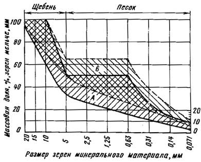
Рис. 3. Прерывистые зерновые составы минеральной части горячих и теплых мелкозернистых асфальтобетонных смесей для плотных асфальтобетонов, применяемых в верхних слоях покрытий
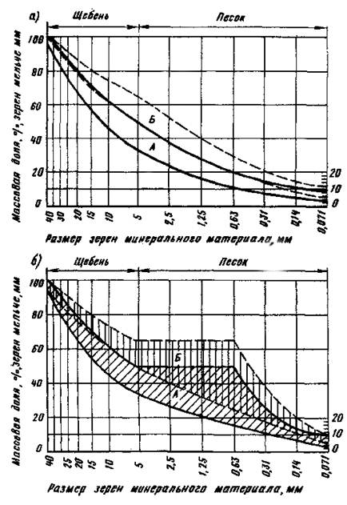
Рис. 4. Непрерывные (а) и прерывистые (б) зерновые составы минеральной части горячих и теплых крупнозернистых смесей для плотных асфальтобетонов, применяемых в нижних слоях покрытия и слоях оснований.
При использовании в асфальтобетоне продуктов дробления полиминерального гравия в IV-V дорожно-климатических зонах также допускается не вводить в асфальтобетонные смеси марки II минеральный порошок, если в массе зерен мельче 0,071 мм содержится не менее 40% карбонатов кальция и магния (СаСО3+МgСО3).
При подборе зернового состава смесей для высокопористого асфальтобетона необходимо учитывать, что содержание зерен мельче 0,071 мм должно быть не менее 4% массы, поэтому в состав этих смесей необходимо вводить минеральный порошок. В смесях для пористого асфальтобетона допускается снижение содержания зерен мельче 0,071 мм до 2%, и минеральный порошок в них можно не вводить.
В результате подбора зернового состава устанавливается процентное соотношение по массе между минеральными составляющими асфальтобетона: щебнем (гравием), песком и минеральным порошком.
Содержание битума в смеси выбирают предварительно в соответствии с рекомендациями прил.1 ГОСТ 9128-84 и с учетом требований стандарта к величине остаточной пористости асфальтобетона для конкретного климатического региона. Так в IV-V дорожно-климатических зонах допускается применение асфальтобетонов с более высокой остаточной пористостью, чем в I-II, поэтому содержание битума в асфальтобетонах для этих зон назначают ближе к нижним рекомендуемым пределам, а в I-II - к верхним.
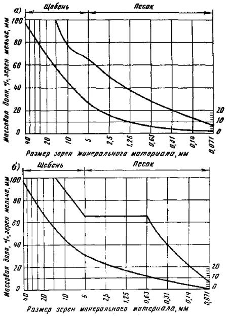
Рис. 5. Непрерывные (а) и прерывистые (б) зерновые составы минеральной части горячих и теплых крупно- и мелкозернистых смесей для пористых и высокопористых асфальтобетонов, применяемых в нижних слоях покрытий и слоях оснований.
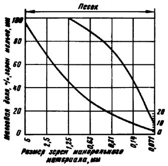
Рис. 6. Зерновые составы минеральной части песчаных асфальтобетонных смесей для высокопористых асфальтобетонов, применяемых в нижних слоях покрытий и основаниях.
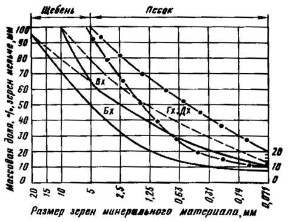
Рис. 7. Зерновые составы минеральной части холодных асфальтобетонных смесей, применяемых в верхних слоях покрытий.
3.5. В лаборатории готовят три образца из асфальтобетонной смеси с предварительно выбранным количеством битума и определяют: среднюю плотность асфальтобетона, среднюю и истинную плотность минеральной части, пористость минеральной части и остаточную пористость асфальтобетона по ГОСТ 12801-84. Если остаточная пористость не соответствует выбранной, то из полученных характеристик рассчитывают требуемое содержание битума Б (%) по формуле
Б 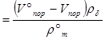
где V°пop - пористость минеральной части, % объема;
Vпор - выбранная остаточная пористость, % объема, принимается в соответствии с ГОСТ 9128-84 для данной дорожно-климатической зоны;
rб - истинная плотность битума, г/см3; rб = 1 г/см3;
r°m - средняя плотность минеральной части, г/см3.
Рассчитав требуемое количество битума, вновь готовят смесь, формуют из нее три образца и определяют остаточную пористость асфальтобетона.
Если остаточная пористость совпадает с выбранной, то рассчитанное количество битума принимается.
3.6. Асфальтобетонную смесь подобранного состава готовят в лаборатории: крупнозернистую - 24-30 кг, мелкозернистую - 8-10 кг и песчаную смесь - 3-4 кг. Из смеси изготавливают образцы и определяют соответствие их физико-механических свойств ГОСТ 9128-84.
Если асфальтобетон подобранного состава не отвечает требованиям стандарта по некоторым показателям, например по прочности при 50°С, то рекомендуется увеличить (в допустимых пределах) содержание минерального порошка или применить более вязкий битум; при неудовлетворительных значениях прочности при 0°С следует снизить содержание минерального порошка, уменьшить вязкость битума или ввести добавку полимера,
При недостаточной водостойкости асфальтобетона целесообразно увеличить содержание либо минерального порошка, либо битума; при этом остаточная пористость и пористость минерального остова должны оставаться в пределах, предусмотренных вышеупомянутым стандартом.
Для повышения водостойкости наиболее эффективны поверхностно-активные вещества и активированные минеральные порошки.
При назначении содержания битума для холодных асфальтобетонных смесей дополнительно следует предусмотреть меры, чтобы смесь не слеживалась при хранении. Для этого после определения требуемого количества битума готовят образцы для испытания на слеживаемость. Если показатель слеживаемости превышает требования ГОСТ 9128-84, то содержание битума снижают на 0,5% и испытание повторяют. Уменьшать количество битума следует до получения удовлетворительных результатов по слеживаемости, однако при этом необходимо следить, чтобы величина остаточной пористости холодного асфальтобетона не превышала требований ГОСТ 9128-84.
3.7. После корректировки состава асфальтобетонной смеси следует вновь испытать подобранную смесь.
Подбор состава асфальтобетонной смеси можно считать законченным, если все показатели свойств асфальтобетонных образцов отвечают требованиям вышеупомянутого ГОСТа.
3.8. Необходимо подобрать состав мелкозернистой горячей асфальтобетонной смеси типа Б марки II для плотного асфальтобетона, предназначенного для устройства верхнего слоя покрытия в III дорожно-климатической зоне.
Имеются следующие материалы:
щебень гранитный фракции 5-20 мм;
щебень известняковый фракции 5-20 мм;
песок речной;
материал из отсевов дробления гранита;
материал из отсевов дробления известняка;
минеральный порошок неактивированный;
битум нефтяной марки БНД 90/130 (по паспорту).
Характеристика испытываемых материалов приведена ниже.
Щебень гранитный: марка по прочности при раздавливании в цилиндре - 1000, марка по износу - И-I, марка по морозостойкости - Мрз25, истинная плотность - 2,70 г/см3;
щебень известняковый: марка по прочности при раздавливании в цилиндре - 400, марка по износу - И-IV, марка по морозостойкости - Мрз15, истинная плотность - 2,76 г/см3;
песок речной: содержание пылеватых и глинистых частиц - 1,8%, глины - 0,2% массы, истинная плотность - 2,68 г/см3;
материал из отсевов дробления гранита марки 1000:
содержание пылеватых и глинистых частиц - 5%, глины - 0,4% массы, истинная плотность - 2,70 г/см3;
материал из отсевов дробления известняка марки 400: содержание пылеватых и глинистых частиц - 12%, глины - 0,5% массы, истинная плотность - 2,76 г/см3;
минеральный порошок неактивированный: пористость - 33% объема, набухание образцов из смеси порошка с битумом - 2% объема, истинная плотность - 2,74 г/см3, показатель битумоемкости - 59 г, влажность - 0,3% массы;
битум: глубина проникания иглы при 25°С - 94×0,1 мм, при 0°С - 31×0,1 мм, температура размягчения - 45°С, растяжимость при 25°С - 80 см, при 0°С - 6 см, температура хрупкости по Фраасу - минус 18°С, температура вспышки - 240°С, сцепление с минеральной частью асфальтобетонной смеси выдерживает, индекс пенетрации - минус 1.
По результатам испытаний пригодными для приготовления смесей типа Б марки II можно считать щебень гранитный, песок речной, материал из отсевов дробления гранита, минеральный порошок и битум марки БНД 90/130.
Таблица 7
|
Массовая доля, %, зерен мельче данного размера, мм |
||||||||||
|
20 |
15 |
10 |
5 |
2,5 |
1,25 |
0,63 |
0,315 |
0,14 |
0,071 |
|
|
Исходные данные |
||||||||||
|
Щебень гранитный |
100 |
95 |
57 |
5 |
- |
- |
- |
- |
- |
- |
|
Песок речной |
100 |
100 |
100 |
100 |
92,4 |
73 |
64 |
38 |
24 |
2,0 |
|
Материалы из отсевов дробления гранита |
100 |
100 |
100 |
100 |
78 |
49 |
30 |
21 |
11 |
7,2 |
|
Минеральный порошок |
100 |
100 |
100 |
100 |
100 |
100 |
98 |
93 |
83 |
74 |
|
Расчетные данные |
||||||||||
|
Щебень гранитный (50%) |
50 |
47,5 |
28,5 |
2,5 |
- |
- |
- |
- |
- |
- |
|
Песок речной (22%) |
22 |
22 |
22 |
22 |
20,3 |
16,1 |
14,1 |
8,4 |
5,3 |
0,4 |
|
Материалы из отсевов дробления гранита (20%) |
20 |
20 |
20 |
20 |
16,6 |
9,8 |
6 |
4,2 |
2,2 |
1,4 |
|
Минеральный порошок (8%) |
8 |
8 |
8 |
8 |
8 |
8 |
7,8 |
7,4 |
6,6 |
5,9 |
|
Итого: |
100 |
97,5 |
78,5 |
52,5 |
43,9 |
33,9 |
27,9 |
20,0 |
14,1 |
7,7 |
|
Требования ГОСТ 9128-84 для смесей типа Б |
95-100 |
85-100 |
70-100 |
50-65 |
38-52 |
28-39 |
20-29 |
14-22 |
9-16 |
6-12 |
Щебень известняковый и материал из отсевов дробления известняка не отвечают требованиям табл. 10 и 11 ГОСТ 9128-84 по показателям прочности.
Зерновые составы отобранных минеральных материалов приведены в табл. 7.
Расчет состава минеральной части асфальтобетонной смеси начинают с определения такого соотношения масс щебня, песка и минерального порошка, при котором зерновой состав смеси этих материалов удовлетворяет требованиям табл. 6 ГОСТ 9128-84.
3.9. В соответствии с ГОСТ 9128-84 и рис. 2,а содержание частиц щебня крупнее 5 мм в асфальтобетонной смеси типа Б составляет 35-50%. Для данного случая принимаем содержание щебня Щ=48%. Поскольку зерен крупнее 5 мм в щебне содержится 95%, то щебня потребуется
Щ = 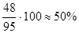
Полученное значение заносят в табл. 7 и рассчитывают содержание в смеси щебня каждой фракции (берут 50% количества каждой фракции щебня).
Расчет количества минерального порошка
3.10. В соответствии с ГОСТ 9128-84 и рис. 2,а содержание частиц, мельче 0,071 мм в минеральной части асфальтобетонной смеси типа Б должно быть в пределах 6-12%. Для расчета принимаем содержание частиц, например, ближе к нижнему пределу требований, т. е. 7%. Если количество этих частиц в минеральном порошке составляет 74%, то содержание минерального порошка в смеси
МП = 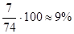
Однако для наших условий следует принять 8% минерального порошка, так как в песке и материале из отсевов дробления гранита уже имеется небольшое количество частиц мельче 0,071 мм. Полученные данные заносят в табл. 7 и рассчитывают содержание минерального порошка каждой фракции (берут 8%).
3.11. Количество песка П в смеси составит:
П =100 - (Щ + МП) = 100 - (50 + 8) = 42%.
Так как в данном примере использованы два вида песка (речной и материалы из отсевов дробления гранита), необходимо определить количество каждого из них в отдельности.
Соотношение между речным песком Пр и материалом из отсева дробления гранита можно установить по содержанию в них зерен мельче 1,25 мм, которых согласно ГОСТ 9128-84 и рис. 2,а в асфальтобетонной смеси типа Б должно быть 28-39%. Мы принимаем 34%; из них 8%, как рассчитано выше, приходится на долю минерального порошка. Тогда на долю песка остается 34-8=26% зерен мельче 1,25 мм. Учитывая, что массовая доля таких зерен в речном песке - 73%, а в материале из отсевов дробления гранита - 49%, составляем пропорцию для определения массовой доля речного песка в минеральной части асфальтобетонной смеси:
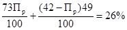 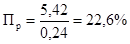
Для расчета принимаем Пр = 22%; тогда количество материала из отсева дробления гранита составит 42 - 22 = 20%. Рассчитав аналогично щебню и минеральному порошку количество каждой фракции в песке и материале, из отсевов дробления гранита, записываем полученные данные в табл. 7. Суммируя в каждой вертикальной графе количество частиц мельче данного размера, получаем общий зерновой состав смеси минеральных материалов. Сравнение полученного состава с требованиями ГОСТ 9128-84 показывает, что он удовлетворяет им.
Аналогично рассчитываем минеральную часть асфальтобетонной смеси прерывистого зернового состава.
3.12. Щебень, песок, материал из отсевов дробления гранита и минеральный порошок смешивают с 6% битума. Такое количество битума является средним значением из рекомендуемых в прил. 1. ГОСТ 9128-84 для всех дорожно-климатических зон.
Из полученной смеси приготавливают три образца
диаметром и высотой 71,4 мм. Поскольку щебня в асфальтобетонной смеси
содержится 50%, смесь уплотняют комбинированным методом: вибрированием на
виброплощадке в течение 3 мин под нагрузкой 0,03 МПа (0,3 кгс/см2) и
доуплотнением на прессе в течение 3 мин под нагрузкой 20 МПа (200 кгс/см2).
Через 12 - 48 ч определяют среднюю плотность (объемную массу) асфальтобетона
(образцов) 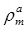 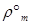
Зная истинную плотность всех материалов и выбрав по ГОСТ 9128-84 остаточную пористость асфальтобетона Vпор = 4%, рассчитывают ориентировочное количество битума. Средняя плотность пробных асфальтобетонных образцов при содержании битума 6,0% (сверх 100% минеральной части) равна 2,35 г/см3. В этом случае
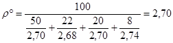
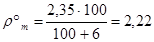
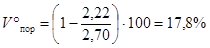
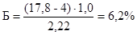
Из контрольной смеси с 6,2% битума изготавливают три образца и определяют остаточную пористость. Если она будет в пределах 4,0 ± 0,5% (как было принято для мелкозернистого асфальтобетона из смесей типа Б), то готовят новую смесь с таким же количеством битума, формуют 15 образцов и испытывают их в соответствии с требованиями ГОСТ 9128-84 (по три образца на каждый вид испытания).
Если показатели свойств образцов, приготовленных из подобранной смеси, имеют отклонения от требований ГОСТа, то необходимо провести корректировку состава смеси (см. п. 3.5) и вновь ее испытать.
4.1. По возможности передислокации АБЗ делят на передвижные, полустационарные и стационарные. Передвижные АБЗ работают на одном месте менее одного сезона, полустационарные - один-два сезона и стационарные - более двух.
В зависимости от схемы размещения АБЗ подразделяют на прирельсовые (припирсовые), расположенные вблизи железнодорожных станций (пристаней), и притрассовые, дислоцирующиеся на значительном удалении от них. Прирельсовые АБЗ обычно совмещают с базой снабжения материалами; притрассовые снабжаются материалами с прирельсовых (припирсовых) баз.
Место размещения АБЗ устанавливают после технико-экономического обоснования, предусматривая доставку смеси к месту укладки с температурой не ниже требуемой.
Уровень основных технических решений строящихся АБЗ должен соответствовать действующим типовым проектам. Производительность оборудования выбирают в зависимости от объемов и сроков строительства. Экономически целесообразно использовать высокопроизводительное передвижное оборудование на притрассовом АБЗ, рационально выбирая место его расположения и количество передислокаций за сезон.
4.2. Способ приема компонентов смесей, складирование и внутризаводское транспортирование должны исключать снижение их качества и загрязнение окружающей среды.
На прирельсовых базах снабжения для приемки щебня, гравия и песка применяют, как правило, подрельсовые приемные устройства. Складирование осуществляют на подготовленных площадках, оснащенных специальными ограждениями, препятствующими смешению различных фракций.
Минеральный порошок из вагонов или цементовозов подают пневмотранспортом на склады силосного типа прирельсовой базы или в расходные емкости притрассового завода.
Склады щебня, песка и минерального порошка рекомендуется устраивать по типовым проектам, разрабатываемым Промтрансниипроектом. Вместимость проектных складов щебня и песка - 50, 25 и 12,5 тыс. м3 в вариантах с повышенным путем, подрельсовыми бункерами (на один и два вагона) и радиально-штабелирующим конвейером или эстакадой; вместимость складов минерального порошка - 1000, 2000 и 4000 т.
Способы выгрузки битума из бункерных полувагонов и цистерн и конструкции битумохранилищ должны исключать его обводнение и загрязнение. Для приема битума по железной дороге и его хранения рекомендуется использовать типовой проект №708-12.84 "Битумохранилище для строительства автомобильных дорог вместимостью 500т", разработанный Киевским филиалом института "Союздорпроект". Для увеличения вместимости битумохранилище следует соединить блоками (2´500, 3´500 и 4´500 т).
Оборудование для введения поверхностно-активных веществ рекомендуется изготавливать по проекту, разработанному ПКБ Главстроймеханизация".
4.3. Теплоснабжение асфальтобетонных заводов целесообразно осуществлять от внешних источников, однако иногда необходимо сооружать котельные установки. В этих случаях рекомендуется использовать типовые проекты № 903-1-164, 903-1-165 и 402-22-1, разработанные институтом СибНИПИгазстрой". Такие котельные рассчитаны на 3, 4 и 6 котлов, работающих на различных видах топлива (мазут и природный газ).
4.4. Для обеспечения комплексной автоматизации технологических процессов на АБЗ наиболее целесообразно использовать блочный (модульный) принцип компоновки электрооборудования. Блоки управления, составленные по унифицированным схемам из однотипных приборов и аппаратов, позволяют добиться максимально необходимого уровня автоматизации и диспетчеризации. Основой может служить разработанная Киевским филиалом Союздорпроекта блочная система автоматизации передвижных поточно-транспортных систем.
4.5. На территории АБЗ располагают бытовые помещения, контору, лабораторию, склад, весовую. В целях рационального использования территории завода большинство зданий блокируют. Для притрассовых и передвижных АБЗ рекомендуется использовать проекты зданий контейнерного типа из каталога проектов инвентарных зданий для строительно-монтажных организаций. Для стационарных заводов существуют типовые проекты служебно-бытовых зданий.
Все проезды и площадки на территории должны иметь твердое покрытие (например, асфальтобетонное).
При работе на асфальтобетонном заводе необходимо предусматривать мероприятия по защите окружающей среды, для чего в состав завода включают очистные сооружения и рассчитывают предельно допустимые выбросы в атмосферу для усредненных условий.
В зависимости от размещения АБЗ и его производительности используют различные варианты генерального плана по соответствующим типовым проектам.
4.6. В состав современных комплектов оборудования для приготовления асфальтобетонных смесей (табл. 8) входят: агрегат питания, сушильный агрегат, топливный бак, системы пылеулавливания, агрегат минерального порошка, нагревательно-перекачивающий агрегат битумохранилища, емкость для битума, нагреватель битума, смесительный агрегат с сортировочно-дозировочным устройством, бункер для хранения готовой смеси и кабина управления.
Таблица 8
|
Производительность, т/ч |
Агрегаты, входящие в комплект |
Габаритные размеры комплекта |
||||||||||
|
Агрегат питания |
Сушильный агрегат |
Смесительный агрегат |
Нагревательно-перекачивающий агрегат битумохранилища |
Емкость для битума |
Нагреватель битума |
Агрегат минерального порошка |
Топливный бак |
Бункер готовой смеси |
Кабина управления |
|||
|
Д-508-2 |
25 |
+ |
+ |
+ |
+ |
+ |
+ |
+ |
+ |
+ |
+ |
20,4´26,5´15 |
|
Д-508-2А |
25 |
+ |
+ |
+ |
- |
+ |
+ |
- |
+ |
- |
+ |
То же |
|
ДС-117-2Е |
25 |
+ |
+ |
+ |
- |
+ |
+ |
+ |
+ |
+- |
+ |
46´36,5´19,8 |
|
ДС-117-2К |
32 |
+ |
+ |
+ |
- |
+ |
+ |
+ |
+ |
+- |
+ |
То же |
|
Д-645-2 |
100 |
+ |
+ |
+ |
+ |
+ |
+ |
+ |
+ |
+ |
+ |
55´47,2´17,2 |
|
Д-645-2Г |
100 |
+ |
+ |
+ |
+ |
+ |
+ |
+ |
+ |
+ |
+ |
То же |
|
Д-645-3 |
100 |
+ |
+ |
+ |
+ |
+ |
+ |
+ |
+ |
+ |
+ |
6,0´40´15 |
|
ДС-158 |
45 |
+ |
+ |
+ |
- |
+ |
+ |
+- |
+ - |
+ |
48´32´19,8 |
|
|
ДС-154 |
40 |
+ |
+ |
+ |
- |
+ |
+ |
+ |
+ |
+ |
+ |
40,3´30,6´19,3 |
Примечание. Знак "+" означает присутствие агрегата в данном комплекте, "-" - отсутствие, "+ -" - вариантность комплектности.
4.7. Агрегаты питания предназначены для подачи в требуемых соотношениях и с необходимой производительностью холодных и влажных минеральных материалов в сушильный агрегат. Они состоят из одной или нескольких секций, снабженных питателем, и располагаются над ленточным транспортером или вдоль него сбоку. В сушильный агрегат материалы подаются наклонным ленточным транспортером или ковшовым элеватором.
4.8. На сушильных агрегатах применяют барабаны непрерывного действия, в которых загрузка и выгрузка материалов осуществляются непрерывно. В таких барабанах материал и горячие газы движутся навстречу друг другу, т.е. используется противопоточная схема. Нагретый и высушенный материал из сушильного барабана ссыпается на лоток разгрузочной коробки, а из него - в приемное устройство "горячего" элеватора.
При использовании жидкого топлива сушильные барабаны оборудуют топливными баками, оснащенными топливными насосами, фильтрами грубой и тонкой очистки топлива, нагревателями, контрольными приборами и регулирующими устройствами.
4.9. Агрегат питания минерального порошка состоит из силоса и питателя, подающего холодный минеральный порошок к смесителю.
4.10. Для хранения битума на прирельсовых асфальтобетонных заводах используют битумохранилища обязательно закрытого типа, оборудованные устройствами для нагрева битума до текучего состояния и насосами для его перекачивания в рабочие битумные котлы. На притрассовых заводах битумохранилища не устраивают. Горячий и обезвоженный битум доставляют битумовозами с прирельсовых баз снабжения и размещают в рабочих котлах. Специальные системы, оборудованные битумопроводами (с обогревом) и насосами, перекачивают битум из рабочего котла в дозировочное устройство, установленное на смесительном агрегате.
Смесительные агрегаты могут быть двух видов: лопастные мешалки и барабаны-смесители; в последнем случае сушильный и смесительный агрегаты объединены.
В состав смесительных агрегатов с лопастными мешалками входят: элеватор, подающий горячие материалы от сушильного барабана; сортировочное устройство с бункерами для разделения горячих минеральных материалов по фракциям; дозирующие устройства минеральных материалов и битума; смеситель для перемешивания компонентов смеси.
Барабаны-смесители не имеют дополнительных сортировочных и дозирующих устройств для минеральных материалов; дозирование минеральных компонентов осуществляется с помощью агрегатов питания, установленных перед барабаном-смесителем.
4.11. Технологический процесс приготовления асфальтобетонной смеси включает следующие основные операции:
подготовку минеральных материалов (подача и предварительное их дозирование, высушивание и нагрев до требуемой температуры, пофракционное дозирование);
подготовку битума (подача из хранилища в битумоплавильню, удаление содержащейся влаги и нагрев до рабочей температуры, а в необходимых случаях - введение поверхностно-активных добавок или разжижителя, дозирование перед подачей в мешалку смесителя);
перемешивание минеральных материалов с битумом и выгрузку готовой асфальтобетонной смеси в накопительные бункеры или автомобили-самосвалы.
4.12. Щебень (гравий), песок или отсевы дробления подают от места складирования к агрегатам питания ленточными транспортерами, фронтальными погрузчиками или бульдозерами. Использование для этой цели бульдозеров менее эффективно из-за значительных потерь материалов и смешения их между собой.
Агрегаты питания оборудуют весовыми или объемными дозаторами для дозирования холодных и влажных материалов перед подачей их в сушильный барабан; при этом предпочтение следует отдавать весовому дозированию. При работе с очень влажными материалами вводят поправку на влажность. Агрегаты питания лопастных смесителей предназначены для предварительного дозирования компонентов.
При использовании лопастных мешалок из агрегатов питания материалы поступают в сушильный барабан, где просушиваются и нагреваются до температуры, указанной в табл. 9. Если минеральные материалы при поступлении в сушильный барабан имеют высокую влажность, то добиваться полного высушивания их рекомендуется не увеличением температуры в барабане, а уменьшением скорости прохождения материала и, следовательно, увеличением времени пребывания в нем.
Таблица 9
|
Температура, °С |
|||
|
битума, поступающего в мешалку |
минеральных материалов при выходе из сушильного барабана |
асфальтобетонной смеси при выпуске из смесителя |
|
|
БН 40/60 |
140-150 |
175-185 |
150-160 |
|
БНД 60/90, БН 60/90 |
135-145 |
170-180 |
145-155 |
|
БНД 90/130, БН 90/130 |
130-140 |
165-175 |
140-150 |
|
БНД 130/200, БН 130/200 |
120-130 |
155-165 |
130-140 |
|
БНД 200/300, БН 200/300 |
110-120 |
145-155 |
120-130 |
|
МГ 130/200, МГО 130/200 |
90-110 |
125-145 |
100-120 |
|
СГ 130/200 |
80-100 |
115-135 |
90-110 |
|
МГ 70/130, МГО 70/130 |
80-90 |
115-125 |
90-100 |
|
СГ 70/130 |
80-90 |
110-125 |
80-100 |
Примечание. При использовании ПАВ или активированных минеральных порошков температуру готовых асфальтобетонных смесей при выпуске из смесителя и температуру нагрева минеральных материалов в сушильном барабане снижают на 20°С.
Просушенные и нагретые щебень, песок или отсевы дробления ковшовым элеватором подают к смесительному агрегату, оборудованному сортировочно-дозировочным устройством, в котором происходит разделение материалов по фракциям; каждая фракция размещается в отдельном отсеке бункера. Из отсеков осуществляют окончательное пофракционное весовое дозирование.
Минеральный порошок в холодном состоянии подают отдельным элеватором в соответствующий отсек бункера или в отдельный бункер, а из него - в общий весовой дозатор.
Если в смесь не вводят минеральный порошок, то температура нагрева минеральных материалов может быть снижена на 15-20°С.
4.13. Битум, используемый для приготовления смесей, должен быть обезвожен и нагрет до температуры, указанной в табл. 9.
Для предотвращения вспенивания битум в процессе выпаривания воды рекомендуется интенсивно перемешивать в котлах (механическими мешалками, циркуляцией битума с помощью насоса) или вводить в него противопенные химические препараты, например СКТН-1 (ГОСТ 13835-73) в количестве 2-3 капель на 7-10 т битума. Во время выпаривания котлы заполняют битумом не более чем на 75-80% их вместимости.
При необходимости в битум вводят ПАВ или разжижитель в соответствии с пп. 2.6, 2.22-2.25.
Из рабочего котла битум поступает в весовой или объемный дозатор, установленный на смесителе.
4.14. Отдозированные щебень, песок и минеральный порошок из весового бункера поступают в смеситель, где перемешиваются между собой ("сухое" перемешивание); затем в смеситель под давлением вводят отдозированный битум и перемешивают его с минеральными составляющими ("мокрое" перемешивание).
ПАВ, вводимый на поверхность минеральных материалов, дозируют отдельным дозатором и подают в смеситель в конце "сухого" перемешивания; на перемешивание ПАВ с минеральными материалами отводят 20-30% времени "мокрого" перемешивания, после чего вводят отдозированный битум и окончательно перемешивают всю смесь.
Продолжительность перемешивания смеси определяется техническими данными смесительной установки и должна обеспечивать равномерное распределение всех его компонентов и наиболее полное обволакивание поверхности минеральных зерен битумом.
Температура готовых асфальтобетонных смесей при выходе из смесителя приведена в табл. 9.
Приготовленную смесь из смесителя выгружают в накопительный бункер или в автомобиль-самосвал для транспортирования его к месту укладки или хранения (для холодных асфальтобетонных смесей).
4.15. При использовании для приготовления смесей барабана-смесителя просушивание, нагрев и перемешивание материалов осуществляют в нем. Отдозированные с помощью агрегатов питания минеральные материалы подают с помощью транспортера в приемный лоток, а затем в барабан-смеситель. В первой половине емкости барабана минеральные материалы просушиваются, нагреваются до заданной температуры, затем они постепенно перемещаются по длине барабана; во второй его половине на просушенный материал через дозатор подается битум и происходит окончательное перемешивание.
4.16. Накопительный бункер является временным складом для хранения готовых горячих и теплых асфальтобетонных смесей.
Накопительные бункеры в составе асфальтобетонного завода обеспечивают ритмичность выпуска асфальтобетонных смесей независимо от наличия транспортных средств, изменения режимов укладки и погодных условий, а также позволяют сократить время загрузки автомобилей и повысить производительность АБЗ.
Однако при хранении смесей в накопительном бункере и при транспортировании их к месту укладки происходит старение битума, проявляющееся в повышении его хрупкости и снижении пластичности. В результате ухудшаются удобоукладываемость и уплотняемость асфальтобетонных смесей, снижается трещино-, водо- и морозостойкость асфальтобетонных покрытий.
Интенсивность старения битума при хранении асфальтобетонной смеси в накопительном бункере и в процессе транспортирования зависит от температуры и времен ни хранения смеси, ее состава и свойств битума. В наибольшей степени подвержены старению горячие асфальтобетонные смеси на вязких битумах марок БНД 40/60, БНД 60/90 и БНД 90/130.
4.17. Время нахождения в бункере смесей, предназначенных для укладки в нижний слой покрытия, и смесей типа А для верхнего слоя следует ограничивать 1,5 ч, для смесей всех других типов - 0,5 ч. Продолжительность хранения смесей, приготовленных с ПАВ, активированными минеральными порошками или полимерами, можно увеличить соответственно до 2 и 1 ч.
Смеси, приготовленные на битумах марок БНД 40/60, не рекомендуется хранить в бункерах.
4.18. Холодные асфальтобетонные смеси после приготовления транспортируют на склад, расположенный на АБЗ или трассе. Площадка и склады, предназначенные для хранений смесей, должны быть хорошо спланированы, очищены и обеспечены водоотводом.
4.19. Перед складированием в штабель смесь охлаждают до температуры 30-40°С перекидкой с помощью экскаватора или погрузчика. Во избежание слеживаемости смеси высота штабеля должна быть, как правило, не более 2 м. В тех случаях, когда смесь характеризуется малой слеживаемостью (показатель не более 3-5 ударов) или предназначается для хранения в течение не более 1-1,5 мес, высоту штабеля можно увеличить до 3-3,5 м.
4.20. Продолжительность хранения смесей зависит от вида применяемого битума: класса СГ - не более 4 мес, МГ и МГО - не более 8 мес.
4.21. Холодные асфальтобетонные смеси можно транспортировать автомобильным, железнодорожным и водным транспортом. При погрузке смесь должна быть рыхлой и иметь температуру не выше 40°С летом и 25°С - зимой; горячие и теплые асфальтобетонные смеси можно перевозить только автомобилями на расстояние не более 50 км.
4.22. При приготовлении асфальтобетонной смеси контролируют: качество всех компонентов, температурный режим подготовки битума, температуру нагрева минеральных материалов, температуру готовой асфальтобетонной смеси, качество готовой смеси.
4.23. Следует разделять входной, операционный и приемочный контроль.
При входном контроле устанавливают соответствие качества исходных материалов каждой поступающей на АБЗ партии стандартам.
Качество поверхностно-активных веществ оценивают по показателю сцепления смеси битума и ПАВ с поверхностью минеральной части асфальтобетонной смеси по ГОСТ 12801-84.
Операционный контроль осуществляют не реже 1 раза в 10 смен, определяя зерновой состав щебня (гравия), песка, материалов из отсевов дробления и минерального порошка, содержание пылевидных и глинистых частиц в щебне (гравии) и песке, влажность неактивированного минерального порошка и порошковых отходов промышленности, гидрофобность активированного минерального порошка. Для испытаний отбирают пробы со склада.
Контролируя качество битума, определяют глубину проникания иглы при 25°С и температуру размягчения вязкого битума или вязкость жидкого битума. Для испытания отбирают пробы из каждого рабочего котла или битумоплавильных установок непрерывного действия (1 раз в смену). При приготовлении разжиженного битума на АБЗ проверяют точность дозирования и последовательность загрузки в котел исходных материалов в соответствии с подобранным в лаборатории составом. Кроме того, проверяют температуру нагрева битума через каждые 2-3 ч в котлах; в битумоплавильных установках непрерывного действия температуру битума контролируют в отсеке готового битума.
В процессе приготовления асфальтобетонной смеси 2-3 раза в смену проверяют соблюдение установленного времени перемешивания минерального материала с битумом (если смесители не имеют автоматизированного управления).
Для приемочного контроля качества готовой асфальтобетонной смеси отбирают одну пробу от каждой партии.
Партией считается количество смеси одного состава выпускаемое на одной установке в течение смены: не более 400 т - горячих и теплых смесей, 200 т - холодных. При изменении состава асфальтобетонной смеси и во всех недостаточно ясных и спорных случаях берут дополнительные пробы.
Температуру асфальтобетонных смесей контролируют в кузове каждого автомобиля непосредственно после выпуска смесей из смесителя.
При приемочном контроле готовой смеси в лаборатории проверяют:
температуру готовой смеси;
зерновой состав и содержание битума;
водонасыщение;
набухание;
предел прочности при сжатии всех смесей при температуре 20°С и горячих и теплых смесей при 50°С;
коэффициент водостойкости;
слеживаемость (только холодных смесей).
Показатели физико-механических свойств должны соответствовать требованиям, предъявляемым ГОСТ 9128-84 к данному виду асфальтобетона.
Зерновой состав и содержание битума рекомендуется определять одним из ускоренных способов, приведенных в ГОСТ 12801-84.
Помимо этого, для контроля зернового состава минеральной части рекомендуется отбирать "сухие" замесы из смесителя, т.е. смесь минеральных материалов без битума. Перемешанные материалы из смесителя выгружают в кузов автомобиля-самосвала, откуда берут пробы по 0,5 кг в пяти-шести местах; эти пробы перемешивают, охлаждают до температуры 20°С и из общей пробы берут среднюю массой 1 кг, для которой определяют зерновой состав способом "мокрого" рассева.
Слеживаемость холодных асфальтобетонных смесей рекомендуется определять через каждые 2-3 ч в течение смены; складировать холодные смеси в штабель для хранения следует только после получения удовлетворительных результатов по этому показателю.
Кроме указанных испытаний готовой продукции, в процессе приемочного контроля осуществляют также периодический контроль:
пористости минерального остова;
остаточной пористости;
предела прочности при сжатии при 0°С (горячих и теплых смесей) и при 20°С после прогрева (холодных смесей);
коэффициентов водостойкости после прогрева (холодных смесей) и при длительном водонасыщении;
сцепления битума с минеральной частью.
Периодически контроль осуществляют не реже 1 раза в 6 мес и при изменении исходных материалов.
Если в результате приемочного контроля выявлено несоответствие показателей физико-механических свойств асфальтобетонных смесей и показателей, полученных при подборе, то проверяют свойства всех исходных материалов, состав смеси, технологический процесс ее приготовления и производят корректировку состава.
5.1. Перед началом укладки асфальтобетонных смесей необходимо провести подготовительные работы.
Конструктивный слой дорожной одежды, на который предстоит укладывать асфальтобетонную смесь, должен быть устроен в соответствии со СНиП 3.06.03-85, уплотнен до нормируемой плотности и должен иметь требуемую ровность поверхности. Если на поверхности слоя имеются значительные неровности, то необходимо устраивать выравнивающий слой из асфальтобетона или других материалов, обработанных органическими вяжущими.
Предусмотренные проектом бортовые камни устанавливают до укладки смеси соответственно заданным высотным отметкам по нивелиру.
5.2. Для обеспечения сцепления укладываемого слоя асфальтобетонной смеси с нижележащим последний очищают от пыли и грязи механическими щетками, сжатым воздухом от передвижного компрессора или другими средствами. Не позднее чем за 6 ч до начала укладки асфальтобетонной смеси нижележащий слой обрабатывают (подгрунтовывают) органическим вяжущим: битумной эмульсией, жидким или вязким битумом. Предпочтение следует отдавать маловязким вяжущим (битумной эмульсии и жидкому битуму), обеспечивающим образование более равномерной пленки на поверхности и лучшее сцепление слоев. Розлив вяжущего производят автогудронаторами на ширину укладываемой полосы.
Для подгрунтовки 1 м2 слоя из необработанных минеральных материалов расходуется 0,5-0,8 л битума, а слоя из асфальтобетона - 0,2-0,3 л. Если в тех же условиях применяется 60%-ная битумная эмульсия, то ее расход соответственно составляет 0,6-0,9 и 0,3-0,4 л.
Обработку вяжущими материалами нижележащих слоев можно не выполнять, если они устроены из асфальтобетона и после завершения его укладки прошло не более 2 сут.
5.3. Регламентированную СНиП 3.06.03-85 ровность слоев дорожных одежд из асфальтобетона можно достичь только асфальтоукладчиком с автоматическими системами обеспечения, ровности (типа «Стабилослой» или «Профиль»), которыми в настоящее время оснащены все отечественные и зарубежные машины. В качестве копира используют трос, натянутый на специальных стойках, установленных вдоль устраиваемого покрытия на обочине по нивелиру согласно проектным вертикальным отметкам.
Если ровность нижележащего слоя обеспечена, то в качестве копира можно использовать лыжу, которая крепится на асфальтоукладчике и перемещается по основанию или смежной уплотненной полосе покрытия.
Длина троса должна быть равна длине сменной захватки. Если укладку ведут широкозахватным укладчиком (ширина 7 м и более), то натягивают два троса (по одному с каждой стороны). При устройстве покрытия с односкатным поперечным профилем уклон задают не датчиком поперечного уклона, а определяют по разнице высот установки левого и правого тросов.
5.4. Перед началом укладки необходимо провести работы по подготовке асфальтоукладчика:
установить рабочий орган на заданную толщину укладываемого слоя;
задать выглаживающей плите угол атаки 2-3%;
настроить автоматическую систему обеспечения ровности;
прогреть выглаживающую плиту.
При работе с импортными машинами в зависимости от вида укладываемой смеси необходимо выбрать и установить режимы работы трамбующего бруса и виброплиты.
Обрубленный край ранее уложенной полосы следует смазать битумом или битумной эмульсией.
5.5. Покрытия и основания из асфальтобетонных смесей устраивают в сухую погоду.
Укладку горячих и холодных смесей следует осуществлять весной и летом при температуре окружающего воздуха, как правило, не ниже 5°С, осенью - не ниже 10°С, теплых смесей - не ниже минус 10°С.
Допускается укладка горячих асфальтобетонных смесей и при более низких температурах (от 5 до 0°С), но преимущественно в нижние слои двухслойных покрытий. Если по этому слою предполагается движение транспортных средств зимой или весной, то используют только плотные асфальтобетонные смеси (для обеспечения достаточной прочности, водо- и морозостойкости). В исключительных случаях допускается устройство и верхних слоев покрытия, но только после укладки нижнего слоя, остывшего до температуры не ниже 20°С. Толщина слоя должна быть не меньше 4 см, что обеспечит более медленное остывание смеси в процессе укладки и уплотнения. Рекомендуется использовать смеси с ПАВ и активированными минеральными порошками, поскольку они улучшают удобоукладываемость и уплотняемость смесей.
5.6. Чтобы обеспечить формирование покрытий из холодных асфальтобетонных смесей, организация работы должна предусматривать завершение их укладки за 15 дней до начала характерного для региона строительства периода осенних дождей. Формирование слоя из холодных смесей с активированными минеральными материалами происходит более интенсивно, поэтому указанное выше ограничение на них не распространяется.
5.7. Для устройства асфальтобетонного покрытия должны быть организованы механизированные звенья, в которые входят самоходный асфальтоукладчик, моторные катки, вспомогательные машины и приспособления (дорожные щетки, передвижные битумные котлы, передвижная электростанция и т.п.). Состав звена зависит от скорости потока и вида асфальтобетонной смеси; характеристики асфальтоукладчиков и катков приведены соответственно в табл. 10 и 11.
Таблица 10
|
Марка асфальтоукладчика |
||
|
ДС-126А |
ДС-143 |
|
|
Ходовая часть |
Гусеничная |
|
|
Производительность, т/ч |
150 |
170 |
|
Ширина укладываемой полосы, м |
3,00 - 3,75 |
3,0 - 4,5 |
|
Вместимость бункера, т |
7 |
10 |
|
Толщина укладываемого слоя, см |
3 - 20 |
3 - 20 |
|
Рабочая скорость движения, м/мин |
1,58 - 33,90 |
1,58 - 8,57 |
|
Габаритные размеры, м |
5,0´3,1´3,2 |
5,3´3,2´3,3 |
|
Масса, т |
13 |
13 |
При использовании асфальтоукладчиков с рабочим органом, состоящим из трамбующего бруса и пассивной выглаживающей плиты (ДС-126А, ДС-143), звено следует формировать не менее чем из трех катков: гладковальцового легкого (ДУ-5), гладковальцового (или на пневматических шинах) среднего (ДУ-48Б, ДУ-55) и тяжелого (ДУ-49А, ДУ-49Б). Легкий и средний катки можно заменить одним вибрационным катком массой 6 - 8 т (ДУ-47Б), так как при работе с выключенным вибратором он выполняет функции легкого катка, а с включенным - среднего. При укладке горячих и теплых асфальтобетонных смесей с содержанием щебня более 40% в состав звена можно не вводить легкий каток. При возможности выбора вида среднего катка предпочтение следует отдавать катку на пневматических шинах.
Таблица 11
|
Марка катка |
||||
|
ДУ-47Б |
ДУ-48Б |
ДУ-49А, ДУ-49Б |
ДУ-55 |
|
|
Принцип воздействия |
Вибрационный |
Статический |
||
|
Масса, т |
6 - 8 |
10 - 13 |
11 - 18 |
20 |
|
Количество: |
||||
|
вальцов |
2 |
2 |
3 |
- |
|
колес |
- |
- |
- |
9 |
|
осей |
2 |
2 |
3 |
- |
|
Диаметр вальцов, мм: |
||||
|
ведущего |
1200 |
1600 |
1600 |
- |
|
ведомого |
1000 |
1000 |
1300 |
- |
|
Ширина уплотняемой полосы, мм |
1200 |
1850 |
1290 |
2500 |
|
Удельное давление, H/см |
400 |
750 |
350 |
- |
|
Вынуждающая сила вибровозбудителя, Н |
7000 |
- |
- |
- |
|
Давление в шинах, МПа |
- |
- |
- |
0,3-0,8 |
|
Обозначение шины |
- |
- |
- |
320´508 |
|
Скорость движения, км/ч |
1,7 - 6,8 |
0 - 6,55 |
0 - 7,8 |
15,0 |
|
Мощность двигателя, кВт |
37 |
37 |
37 |
110 |
|
Габаритные размеры, м |
4,60´1,60´2,85 |
5,00´1,85´3,00 |
6,5´2,0´3,4 |
6,4´2,5´3,2 |
При использовании асфальтоукладчиков с рабочим органом, состоящим из трамбующего бруса и вибрационной плиты (в основном импортные машины), укладку мелко- или крупнозернистых горячих и теплых смесей осуществляют звеном из средних и тяжелых катков; легкий каток необходим только при укладке песчаных смесей.
5.8. Наиболее эффективно применение широкозахватных асфальтоукладчиков, позволяющих устраивать конструктивный слой дорожной одежды на полную ширину одной полосы (рис. 8).
Если ширина укладываемого одним асфальтоукладчиком слоя меньше ширины конструктивного слоя, то работы ведут сопряженными полосами двумя или несколькими укладчиками одновременно. Ширину полосы укладки назначают кратной ширине конструктивного слоя, а разрыв между укладчиками по продольной оси дороги - 20-30 м (рис. 9).
5.9. При невысоких темпах строительства допускается производить работу сопряженными полосами одним асфальтоукладчиком. В этом случае длина полосы укладки горячей асфальтобетонной смеси, позволяющая обеспечить хорошее сопряжение смежных полос, зависит от температуры окружающего воздуха (табл. 12).
Таблица 12
|
Длина укладываемой полосы, м |
||
|
на защищенных от ветра, застроенных и лесных участках, в глубоких выемках |
на открытых участках |
|
|
5 - 10 |
30 - 60 |
25 - 30 |
|
10 - 15 |
60 - 100 |
30 - 50 |
|
15 - 25 |
100 - 150 |
50 - 80 |
|
Выше 25 |
150 - 200 |
80 - 100 |
При укладке конструктивных слоев сопряженными полосами работу организуют так, чтобы к концу смены слой был уложен на всю ширину.
5.10. На участках с продольными уклонами, превышающими 40%, предусматривают укладку смеси вверх по уклону для предотвращения ее сползания.
Рис. 8. Технологическая
схема устройства двухслойного асфальтобетонного покрытия на проектную ширину
при работе в одну смену:
1 - автомобиль-самосвал; 2 -
асфальтоукладчик; 3 - каток на пневматических шинах; 4 - каток тяжелый
гладковальцовый массой 11-18 т; 5 - поливочно-моечная машина
5.11. С целью повысить коэффициент использования машин и оборудования устройство асфальтобетонного покрытия целесообразно проводить в две смены, укладывая верхний слой в первую смену (днем), нижний - во вторую (вечером накануне).
Рис. 9.
Технологическая схема устройства двухслойного асфальтобетонного покрытия
сопряженными полосами в первую (а) и вторую (б) смены:
1 - автогудронатор; 2 - автомобиль-самосвал; 3 -
асфальтоукладчик; 4 - каток гладковальцовый массой 6-8 т; 5 - каток на
пневматических шинах; 6 - каток гладковальцовый массой 11-18 т; 7 -
поливочно-моечная машина
5.12. Минимально допустимая температура смесей при укладке в зависимости от вида смеси и температуры воздуха должна соответствовать приведенной в табл. 13.
Таблица 13
|
Толщина слоя, см |
Минимальная температура смеси в асфальтоукладчике, °С, при температуре воздуха, °С |
||||||||
|
30 |
20 |
15 |
10 |
5 |
0 |
-5 |
-10 |
||
|
Горячая |
До 5 |
115 120 |
125 135 |
130 140 |
135 145 |
140 150 |
145 155 |
- |
- |
|
5-10 |
105 110 |
115 120 |
120 125 |
125 130 |
130 135 |
135 140 |
- |
- |
|
|
Теплая |
До 5 |
90 100 |
95 105 |
100 110 |
105 115 |
110 120 |
115 125 |
120 130 |
125 135 |
|
5-10 |
90 95 |
95 100 |
95 105 |
100 110 |
105 115 |
110 115 |
115 125 |
120 130 |
|
Примечание. Над чертой - при скорости ветра до 6 м/с, под чертой - 6-13 м/с.
Доставка смеси должна быть организована таким образом, чтобы до минимума сократить количество остановок асфальтоукладчика. Смесь загружают постепенно, по мере ее расхода, в бункер асфальтоукладчика, который должен работать без остановок и изменения скорости движения; при этом упоры бункера толкают снятый с тормозов автомобиль-самосвал с поднятым кузовом.
При выгрузке необходимо следить за тем, чтобы смесь не просыпалась на нижележащий слой. Просыпавшуюся смесь следует убрать лопатами, особенно с мест прохода гусениц или колес асфальтоукладчика.
5.13. Асфальтобетонные смеси следует доставлять к месту укладки бесперебойно автомобилями-самосвалами соответствующей грузоподъемности с учетом вместимости бункера асфальтоукладчика и высоты разгрузки кузова самосвала.
5.14. При непродолжительных перерывах в доставке смеси последнюю не рекомендуют полностью вырабатывать из бункера асфальтоукладчика (во избежание остывания питателя и затвердения на нем смеси), бункер с оставшейся смесью закрывают до возобновления доставки смеси. В конце смены и при продолжительных перерывах необходимо расходовать всю смесь, находящуюся в бункере, шнековой камере и под плитой, во избежание поломки асфальтоукладчика.
5.15. Толщина слоя из горячих и теплых асфальтобетонных смесей, укладываемых асфальтоукладчиками с трамбующим брусом и пассивной выглаживающей плитой, должна быть больше проектной на 15-20%, при использовании асфальтоукладчика с трамбующим брусом и виброплитой - на 10-15%.
При укладке холодной асфальтобетонной смеси асфальтоукладчиком с выключенными уплотняющими рабочими органами и при укладке вручную толщина слоя должна быть больше проектной на 60-70%.
5.16. Скорость движения асфальтоукладчика должна быть постоянной и не превышать 2,5 - 3,0 м/мин. В экстренных случаях, когда смесь доставляют к месту укладки после длительного перерыва большим количеством автосамосвалов, можно на непродолжительное время увеличить скорость укладчика до 5 м/мин.
5.17. Горячие и теплые асфальтобетонные смеси укладывают асфальтоукладчиком с включенным трамбующим брусом, холодные - с выключенным во избежание нарушения сплошности уложенного слоя.
5.18. При вынужденной остановке укладчика необходимо за 10 м до остановки выключить привод рабочего органа, чтобы на поверхности слоя не образовался уступ.
В процессе укладки при переполнении смесью шнековой камеры необходимо отрегулировать лопатки датчиков уровня.
После прохода асфальтоукладчика на поверхности уложенного слоя не должно быть трещин, раковин, разрывов и т.п., что связано с неточной регулировкой рабочих органов по высоте, недостаточной температурой прогрева выглаживающей плиты, неравномерным заполнением смесью шнековой камеры. Замеченные дефекты необходимо исправить вручную до начала уплотнения слоя катками.
5.19. Участки продольных и поперечных сопряжений чаще подвергаются разрушающему действию воды, поэтому качеству их устройства следует уделять повышенное внимание, особенно при работе одного асфальтоукладчика. Края ранее уложенной полосы необходимо разогреть с помощью инфракрасных излучателей либо путем укладки на полосу горячей смеси шириной 10-20 см. После разогрева кромки неуплотненную смесь следует сдвинуть на смежную полосу, при этом толщина укладываемого (неуплотненного) слоя не должна быть меньше толщины ранее уплотненного слоя у сопряжения полос.
Поперечные сопряжения покрытия должны быть перпендикулярны оси дороги. Края ранее уложенной полосы обрубают (пневмомолотами или перфораторами) вертикально по шнуру и смазывают битумом или битумной эмульсией.
Обрубать или обрезать края целесообразно сразу после уплотнения покрытия, особенно в случае использования горячих и теплых асфальтобетонных смесей типов А, Б и Г.
5.20. Если при работе асфальтоукладчика остается неуложенной узкая полоса на покрытии (например, на виражах и т.п.), то смесь разрешается укладывать вручную (одновременно с асфальтоукладчиком). Кроме того, вручную ведутся работы в местах, недоступных для асфальтоукладчика. Горячую асфальтобетонную смесь выгружают на проезжую часть, укладывают на подготовленную поверхность совковыми лопатами, тщательно прорабатывают граблями, а затем разравнивают металлическими движками. Инструмент должен быть нагрет в специальных передвижных нагревателях (жаровнях). При укладке холодных смесей отдельные слежавшиеся комья необходимо тщательно разрыхлять граблями.
5.21. Толщина слоя при укладке вручную или автогрейдером должна быть на 20-25% больше проектной. Для соблюдения требуемой толщины рекомендуется устраивать специальные "маяки".
5.22. Асфальтобетонные смеси уплотняют сразу же после укладки. Слои из горячих и теплых асфальтобетонных смесей следует уплотнять, начиная с той максимально возможной температуры, при которой не образуется деформаций от укатки, что позволит увеличить время эффективного уплотнения и при меньших затратах работы катков достигнуть более высокой плотности и механической прочности асфальтобетона.
5.23. Температура горячих смесей, содержащих более 40% щебня, должна быть 120 - 160°С, теплых - 100 - 140°С. Уплотнение смесей, содержащих менее 40% щебня, а также песчаных начинают при температуре соответственно на 20-30°С ниже.
5.24. Применение активированных минеральных порошков и добавок ПАВ позволяет снизить температуру начала уплотнения смеси на 10-20°С.
В каждом конкретном случае температуру начала и конца уплотнения горячих и теплых смесей устанавливают пробной укаткой.
5.25. Температура холодных асфальтобетонных смесей при уплотнении должна быть не ниже 5°С.
5.26. В процессе уплотнения слоя катки должны двигаться по укатываемой полосе от ее краев к оси дороги, а затем от оси к краям, перекрывая каждый след на 20-30 см. При устройстве сопряженных полос вальцы катка при уплотнении первой полосы должны находиться от кромки сопряжения на расстоянии не менее 10 см. При уплотнении второй полосы первые проходы необходимо выполнять по продольному сопряжению с ранее уложенной полосой. При наезде на свежеуложенную полосу катки должны двигаться ведущими вальцами вперед, что исключает образование волны перед вальцом.
5.27. Для обеспечения ровности покрытия в процессе уплотнения необходимо, чтобы каток трогался или изменял направление движения плавно (без рывков). Запрещается останавливать каток на горячем недоуплотненном асфальтобетонном покрытии. Если остановка необходима, то каток следует вывести на ранее уплотненные и остывшие участки покрытия.
Заправку катков топливом и смазочными материалами следует производить вне асфальтобетонного покрытия.
5.28. Чтобы предотвратить прилипание асфальтобетонной смеси к вальцам катка, их рекомендуется смачивать водой или смесью воды с керосином (1:1). Не разрешается применять для этих целей соляровое масло и топочный мазут.
Прилипание асфальтобетонной смеси к пневматическим шинам быстро прекращается, как только они нагреются от уплотняемой смеси. Во избежание остывания пневматических шин допускается останавливать катки только вне полосы укатки на непродолжительное время.
5.29. Скорость движения и количество проходов каждого типа катка должны соответствовать требованиям СНиП 3.06.03-85. При укладке смесей вручную или автогрейдером число проходов катков следует увеличить на 20-30%.
5.30. В процессе уплотнения после двух-трех проходов первого катка следует проверять поперечный уклон и ровность покрытия шаблонами - трехметровой или двухопорной рейкой с приспособлением для фиксации неровностей.
Выявленные дефекты необходимо немедленно устранять: в заниженные места добавлять смесь, завышенные - разрыхлять граблями, а излишки смеси убирать лопатой. Обнаруженные при первых проходах катков участки с пористой поверхностью и с нарушенной сплошностью слоя должны быть исправлены.
5.31. Дефектные участки (жирные, сухие места, раковины и т.п.) на покрытии после уплотнения должны быть вырублены, места вырубок тщательно очищены, края смазаны горячим вязким или жидким битумом, заполнены новой асфальтобетонной смесью и уплотнены.
Во избежание раскатывания смеси в конце укатываемой полосы следует поместить упорную доску или рейку.
5.32. Участки, недоступные для катка, уплотняют металлическими трамбовками, перекрывая предыдущий след от удара трамбовки примерно на 1/3. Уплотнение следует вести до полного исчезновения таких следов.
5.33. Перед началом устройства асфальтобетонных конструктивных слоев, а также в процессе работы проверяют плотность и чистоту поверхности нижележащих слоев, а в том случае, когда используют бортовые камни, контролируют также правильность их установки.
5.34. В каждом автомобиле, прибывающем к месту укладки, измеряют температуру горячей и теплой асфальтобетонной смеси и, если она ниже указанной в табл. 13, смесь бракуют.
5.35. В процессе укладки толщину уложенного слоя контролируют металлическим щупом с делениями, а поперечный и продольный уклоны - шаблоном через каждые 100 м. Особое внимание следует уделять контролю качества устройства продольных и поперечных сопряжений.
5.36. В процессе уплотнения контролируют соблюдение заданного режима уплотнения смеси, ровность, поперечный и продольный уклоны. Для оперативного контроля плотности рекомендуется использовать различные экспресс-методы (радио изотопный, порометрический, акустический), для которых разработаны специальные приборы и методики.
В первый период формирования покрытий из холодных (а в некоторых случаях и теплых) асфальтобетонных смесей следят за правильностью регулирования движения по построенному участку.
5.37. Контроль качества смеси и плотности слоя осуществляют на пробах (вырубках или кернах), отобранных из конструктивных слоев: при применении горячего и теплого асфальтобетонов - через 1 - 3 сут, холодного - через 15 - 30 сут после устройства слоя и открытия по нему автомобильного движения.
Керны (вырубки) отбирают из середины полосы движения, из мест, находящихся на расстоянии не менее 1 м от края покрытия, а также на участках, расположенных в непосредственной близости от сопряжения.
С каждых 7000 м2 отбирают три пробы.
При отборе проб измеряют толщину слоев покрытия и визуально оценивают прочность сцепления их между собой и с основанием.
Качество смеси устанавливают по показателям свойств, образцов, переформованных из вырубок, а степень уплотнения конструктивных слоев оценивают коэффициентом уплотнения, определяемым в соответствии с ГОСТ 12801-84.
Коэффициенты уплотнения конструктивных слоев из асфальтобетона должны быть не ниже:
0,99 - для плотного асфальтобетона из горячих и теплых смесей типов А и Б;
0,98 - для плотного асфальтобетона из горячих и теплых смесей типов В, Г и Д, пористого и высокопористого асфальтобетонов;
0,96 - для асфальтобетона из холодных смесей.
5.38. Приемку выполненных работ осуществляют в соответствии со СНиП 3.06.03-85.
6.1. Для повышения трещиностойкости и сдвигоустойчивости асфальтобетонных покрытий, а также устойчивости к динамическим воздействиям на дорогах с тяжелым интенсивным движением, мостах, аэродромах, в местах остановок транспортных средств, на полосах примыкания к трамвайным путям в асфальтобетонные смеси рекомендуется вводить битум совместно с полимерами. Битум с добавкой полимера называют полимерно-битумным вяжущим (ПБВ).
6.2. Из существующих классов полимеров (эластомеры, пластмассы, смолы и термоэластопласты) в качестве добавок к дорожным битумам целесообразно использовать термоэластопласты.
Термоэластопласты - это полимеры в невулканизированном состоянии, которые обладают высокой прочностью, присущей пластмассам, и эластичностью, характерной для эластомеров. Температура хрупкости термоэластопластов достигает минус 80°С и ниже. Эти полимеры хорошо растворяются в нефтепродуктах при температуре около 80°С. Лучшими для приготовления ПБВ являются дивинилстирольные (ДСТ) и изопренстирольные (ИСТ) термоэластопласты.
6.3. Концентрацию ДСТ назначают такой, чтобы температура перехода вяжущего в хрупкое состояние была близка к минимальной отрицательной температуре воздуха в районе строительства. Так, например, при температурах минус 25, 35, 50 и 60°С рекомендуется концентрация ДСТ в ПБВ соответственно 2, 3, 4 и 6% массы.
6.4. В вязкие битумы добавку ДСТ вводят в виде раствора в нефтепродуктах; при использовании маловязких битумов (с глубиной проникания иглы при 25°С более 1300,1 мм) ДСТ можно предварительно не растворять. В этом случае получают вязкие ПБВ.
Для растворения ДСТ рекомендуются:
вязкие и маловязкие битумы по ГОСТ 22245-90;
жидкие битумы марок МГО 70/130 и МГО 130/200 по ГОСТ 11955-82;
сырье для производства вязких битумов по ТУ 38 101582-75;
дизельное топливо согласно ГОСТ 305-82.
ДСТ марок ДСТ-30-01 должны соответствовать требованиям ТУ 38 103267-80, марок ДСТ-30-Б ТУ 38 40359-85 1 группы, а также II группы с характеристической вязкостью не менее 1,2 дл/г.
6.5. Схема приготовления ПБВ приведена на рис. 10.
Рис. 10. Схема
приготовления ПБВ на ДБЗ:
1 - емкость для растворителя ДСТ
(вместимость 60 м3); 2 - бензонасос; 3 - емкости для раствора ДСТ
(вместимостью по 20 м3); 4, 6-8 - насосы Д-171; 5 - битумные котлы
для ПБВ; 9 - установка для разогрева и обезвоживания битума
Для приготовления раствора ДСТ из емкости 1 по трубопроводу с помощью бензонасоса 2 подают растворитель в емкости 3 и при необходимости нагревают до рабочей температуры. В растворитель загружают ДСТ (в виде крошки) и перемешивают до однородного состояния.
Раствор ДСТ подают насосом 4 по трубопроводу в битумные котлы 5 и перемешивают с битумом до однородного состояния. Подогрев котла при подаче в него раствора ДСТ следует отключать. Все битумопроводы, дозировочные бачки и другие элементы битумных коммуникаций должны быть обеспечены системой паро- или маслоподогрева. Дозирование необходимого количества раствора ДСТ и битума для получения разжиженного ПБВ осуществляют с помощью расходомера или специально оттарированной рейки.
6.6. При применении дизельного топлива оборудование для приготовления ПБВ должно быть взрыво- и пожаробезопасным.
6.7. Для приготовления ПБВ без предварительного растворения полимера ДСТ из мешков (с известной массой) подают непосредственно в котлы и перемешивают с битумом до однородного состояния.
Продолжительность выдерживания ПБВ (как и битума) при рабочей температуре не должна превышать 6 ч. Не использованный в течение смены запас ПБВ допускается выдерживать в котле при температуре не выше 60°С.
6.8. Зерновые составы асфальтобетонов с ПБВ (полимерасфальтобетонов) не отличаются от стандартных.
При приготовлении полимерасфальтобетонных смесей температура перемешивания вязких ПБВ с минеральными материалами принимается на 10°С выше, чем при использовании битумов той же консистенции по СНиП 3.06.03-85.
ПБВ и полимерасфальтобетон должны отвечать требованиям ТУ 35 1669-88 Минтрансстроя.
Требования к полимерасфальтобетонным смесям в основном те же, что и в ГОСТ 9128-84 для горячих и теплых асфальтобетонных смесей соответствующей марки. Однако предел прочности полимерасфальтобетона при сжатии при 50°С допускается на 10% ниже стандартного, а водонасыщение должно находиться в пределах 1,0 - 2,5%.
6.9. Асфальтобетон с ПБВ отличается повышенной деформативностью при отрицательных температурах и упругостью при положительных (модуль упругости при минус 20°С в 3-6 раз меньше, а при 40°С - 1,5-3 раза больше, чем у асфальтобетона на вязком битуме марок БНД).
В связи с этим применение таких асфальтобетонов эффективно в районах Севера и Сибири.
6.10. Использование в горячих асфальтобетонных смесях дробленой резины повышает долговечность покрытий, улучшает их фрикционные свойства, что позволяет в ряде случаев уменьшить расход высокопрочного трудношлифуемого щебня.
При использовании асфальтобетонных смесей с дробленой резиной в верхних слоях дорожной одежды снижаются динамические нагрузки на нижележащие слои и уменьшается вероятность копирования трещин и других дефектов, перекрываемых слоев.
6.11. Для приготовления асфальтобетонных смесей используют дробленую резину марки РДС с максимальным размером зерен 1 мм, отвечающую требованиям ТУ 10436-87; при этом максимальные плотность и прочность асфальтобетона обеспечиваются при содержании в дробленой резине частиц мельче 0,63 мм не менее 60% массы.
6.12. Дробленую резину вводят либо непосредственно в минеральный материал, либо предварительно объединив с битумом; при этом в первом случае ее зерновой состав учитывается в общем зерновом составе минеральных составляющих, а во втором - не учитывается.
6.13. Содержание дробленой резины при введении ее в минеральную часть должно составлять 1-2% массы минеральной части, при добавлении в битум - 5-7% массы битума.
При введении резины в минеральную часть смесители оборудуют дополнительными устройствами, включающими расходную емкость, средства для подачи дробленой резины из емкости в смеситель и отдельный дозатор для введения в смеситель. (Для этой цели может служить дозатор минерального порошка). Точность дозирования дробленой резины должна составлять ± 1,5% массы.
6.14. Материалы в смеситель подают в такой последовательности: вначале щебень, песок, минеральный порошок, затем дробленую резину; после предварительного "сухого" перемешивания в течение 15-30с вводят битум и заканчивают перемешивание. Общее время перемешивания 60-90 с.
При введении дробленой резины в битум компоненты перемешивают в рабочем котле, оборудованном приспособлением для перемешивания. Температура битума при объединении с дробленой резиной должна составлять 150-170°С. Приготовленную смесь следует использовать в течение одной рабочей смены.
6.15. Для улучшения удобоукладываемости и уплотняемости асфальтобетонных смесей целесообразно вводить в битум мягчитель, например сланцевый (ТУ 38 10910-77), в количестве 4-7% массы битума.
Для улучшения уплотняемости готовые асфальтобетонные смеси целесообразно выдерживать в накопительных бункерах в течение 1-2 ч.
6.16. Порошковые отходы промышленности (пыль уноса цементных заводов, зола уноса ТЭС, ферропыль, флотохвосты, шламы и пр.) разнообразны как по зерновому, так и по химическому составам и применяются для, замены минерального порошка или части песка и минерального порошка в асфальтобетонах из смесей III марки.
Основными условиями применения порошковых отходов является отсутствие в них глинистых и органических примесей, водорастворимых соединений и свободной окиси кальция.
6.17. Различаются тонкодисперсные порошковые отходы с содержанием зерен мельче 0,071 мм 60-95% (ферропыпь, шламы, пыль уноса цементных заводов, циклонная пыль и др.) и грубодисперсные - 30-60% (флотохвосты, золошлаковые смеси, отсевы дробления слабых известняков и др.). Все виды отходов характеризуются повышенной пористостью и битумоемкостью и способствуют повышению этих показателей асфальтобетонов, приготавливаемых с применением указанных отходов.
Тонкодисперсные отходы должны быть рыхлыми, сыпучими, легко подаваться пневмотранспортом. Влажность их не должна превышать 2% по массе.
Сильно обводненные порошковые отходы (флотохвосты, шламы) после просушивания, как правило, агрегируются, поэтому их перед применением следует измельчить до исчезновения комков.
Тонкодисперсные порошковые отходы подают в смеситель через агрегат минерального порошка.
6.18. Грубодисперсные порошковые отходы, как правило, предварительно просушивают в сушильном барабане, поэтому их первоначальная влажность может быть до 5% по массе.
При просушивании содержание зерен мельче 0,071 мм уменьшается (до 2%), что необходимо учитывать при проектировании составов асфальтобетонных смесей.
В отдельных случаях рационально организовать домол грубодисперсных отходов в шаровых мельницах, чтобы их зерновой состав соответствовал требованиям ГОСТ 16557-78. Совместив процесс измельчения с направленной физико-химической активацией продуктов измельчения, можно приготовить высококачественный активированный минеральный порошок с заданными свойствами. Для этих целей могут быть использованы фосфорные шлаки, отработанные формовочные смеси, отходы дробления слабых известняков и другие материалы. Выбор ПАВ для адсорбционной активации измельчаемых материалов осуществляют в соответствии с пп. 2.22-2.25.
6.19. Для асфальтобетонных смесей с добавками порошковых отходов предпочтение следует отдавать применению битумов с наиболее высокой вязкостью (из числа рекомендуемых для данного региона).
6.20. Зерновой состав минеральной части асфальтобетонов, приготовленных с применением порошковых заменителей, должен отвечать требованиям ГОСТ 9128-84.
Повысить плотность минерального остова асфальтобетонов на основе порошковых отходов можно за счет применения двух видов отходов, взаимоисключающих недостатки каждого в зерновых составах, или за счет применения смеси порошкового отхода со стандартным минеральным порошком.
6.21. Испытания порошковых отходов проводят по методам ГОСТ 12784-78. Пористость, битумоемкость, набухание и коэффициент водостойкости грубодисперсных отходов определяют на зернах, прошедших через сито № 0315.
Порошковые отходы могут применяться в асфальтобетонных смесях после специальных исследований, заключающихся в определении их свойств, особенностей взаимодействия с битумом, а также свойств асфальтобетонов, установленных как по методам ГОСТ 12801-84, так и по дополнительным методам, изложенным в разд.7 настоящего Пособия.
6.22. Приготовление, укладку и уплотнение асфальтобетонных смесей на порошковых отходах промышленности осуществляют в соответствии со СНиП 3.06.03-85 и с настоящим Пособием.
6.23. Использование в асфальтобетоне природных битумосодержащих пород позволяет полностью или частично отказаться от применения нефтяных промышленных битумов и уменьшить расход песка и минерального порошка.
6.24. Одна из разновидностей природных битумосодержащих пород - это киры, крупные месторождения которых расположены в районах Западного Казахстана и Азербайджана. Киры представляют собой рыхлые породы, преимущественно мелкие и пылеватые пески, пропитанные природными битумами различной вязкости. Содержание битума в кирах даже одного месторождения колеблется в очень широких пределах. Для приготовления асфальтобетонных смесей целесообразно использовать киры с содержанием битума 10-20% массы. Более высокая добавка битума затрудняет разработку и транспортирование кира, а при меньшем содержании битума требуется или дополнительное введение нефтяного промышленного битума, или введение в асфальтобетонную смесь значительного (более 50%) количества породы, что может оказаться технологически очень сложным и экономически нецелесообразным.
Битумы, содержащиеся в кирах, по консистенции относятся к жидким или занимают промежуточное положение между вязкими и жидкими битумами.
6.25. При подборе состава асфальтобетонных смесей на кирах необходимо учитывать следующее: от содержания кира в смеси зависит состав ее минеральной части и содержание вяжущего.
6.26. Для расчета состава минеральной части устанавливают содержание природного битума в кире Бк (% массы минеральной части кира):
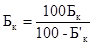
где Б’к - содержание природного битума в кире, % массы кира.
Задаваясь содержанием природного битума в асфальтобетонной смеси Б (% массы минеральной части смеси), определяют содержание минеральной части кира Мк (% массы смеси):
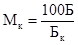
6.27. Дальнейшее проектирование состава смеси зависит от количества компонентов. При проектировании двухкомпонентной системы (щебень + кир, гравийно-песчаная смесь или щебеночно-песчаная смесь + кир) содержание минерального материала определяется как разность между 100%-ным содержанием минеральной части кира и рассчитанным по формуле (3). Для трехкомпонентной смеси (щебень или гравий + песок + кир) назначается количество щебня (гравия) в пределах 20-50% массы, а содержание песка определяется из расчета получения общей массы всех компонентов минеральной части, равной 100%. Расчет состава четырехкомпонентной смеси, в которой используется минеральный порошок, выполняется аналогично.
Затем таким же способом рассчитывают еще два-три варианта смесей, отличающихся содержанием битума, и их зерновые составы. В лаборатории готовят и испытывают смеси трех составов и по результатам испытания выбирают такую смесь, которая при минимальном содержании кира обеспечивает требуемое качество материала.
6.28. Для приготовления асфальтобетонных смесей с кирами используют серийные асфальтосмесительные установки, дооборудованные технологическими линиям и подготовки и подачи в смеситель кира.
Возможно приготовление смесей по двум технологиям:
I - одноэтапное перемешивание; предусматривает подачу всех компонентов смеси в мешалку и их перемешивание, Как показал опыт использования киров Западного Казахстана, температура нагрева щебня и песка должна быть 190-210°С, что позволит при контакте с ними обеспечить нагрев кира, который подается в смеситель без предварительного нагрева. При этой технологии производительность смесительной установки уменьшается в 2 раза;
II - двухэтапное перемешивание; предусматривает применение двух смесителей; при этом объединение всех компонентов смеси осуществляют в первом смесителе, после чего выдерживают (термостатируют) смесь в бункере-термосе, а затем для окончательного перемешивания подают во второй смеситель.
Температура готовой смеси должна быть не ниже 100°С.
6.29. Устройство конструктивных слоев покрытий из асфальтобетонных смесей с кирами выполняют в соответствии с требованиями СНиП 3.06.03-85.
6.30. Применение серы в качестве компонента асфальтобетонной смеси позволяет уменьшить расход битума, увеличить производительность уплотняющих механизмов, снизить температуру нагрева битума и минеральных материалов, улучшить эксплуатационные свойства и повысить долговечность асфальтобетонных покрытий.
Рекомендуется использовать техническую серу (комовую, молотую или жидкую), отвечающую требованиям ГОСТ 127-76.
6.31. В основу проектирования составов асфальтобетона с добавками серы заложен принцип сохранения постоянства объема вяжущего, т.е. независимо от количества добавки серы общий суммарный объем серы и битума (серно-битумного вяжущего) должен быть равен объему битума в асфальтобетоне без добавки серы. Только соблюдая это условие, можно обеспечить оптимальную поровую структуру асфальтобетона.
6.32. Зерновой состав минеральной части асфальтобетонной смеси и оптимальное количество вяжущего (нефтяного битума) подбирают в соответствии с разд.3 настоящего Пособия.
6.33. Далее необходимо установить дозировку серы. Рекомендуется следующее соотношение (мас. ч.) между битумом и серой: для битумов марок БНД 40/60, БНД 60/90, БН 60/90, БН 90/130 - 70:30, марки БНД 90/130 - 60:40. Изменять вышеуказанные соотношения можно лишь в сторону уменьшения содержания серы.
6.34. Так как плотность серы в 2 раза превышает плотность битума, оптимальное содержание вяжущего В (% массы) в асфальтобетонной смеси необходимо уточнить по формуле
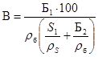
где Б1 - оптимальное количество битума в смеси, установленное при подборе состава, % массы;
S1, Б2 - содержание соответственно серы и битума в вяжущем, % массы;
rS, rб - плотность соответственно серы и битума, г/см3.
Содержание битума Б и серы S в смеси определяют по формулам:
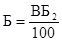 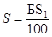
Пример расчета. Допустим, что при подборе состава асфальтобетонной смеси установлено оптимальное содержание битума 7%. Назначаем соотношение между битумом и серой 70:30. Определяем количество вяжущего в смеси:
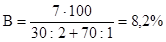
Содержание битума и серы в смеси составит соответственно;
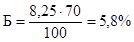
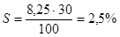
т.е. на приготовление 1 т смеси битума необходимо 58 кг, серы - 25 кг.
После подбора состава следует приготовить контрольную смесь и определить все физико-механические свойства. Асфальтобетон с добавкой серы должен отвечать тем же требованиям, что и асфальтобетон с нефтяными битумами без добавки серы в соответствии с ГОСТ 9128-84.
6.35. Асфальтобетонные смеси с добавками серы следует приготавливать согласно положениям СНиП 3.06.03-85 с учетом следующих особенностей.
Добавку серы можно вводить в асфальтобетонную смесь двумя способами: либо предварительно в битум, либо непосредственно в смеситель как самостоятельный компонент.
Для введения в битум можно использовать комовую или жидкую серу. Проще всего вводить добавку серы в битумный котел. Для этого его нужно оборудовать мешалкой пропеллерного или шнекового типа. Отдозированную (по объему или массе) серу постепенно вводят в котел, заполненный битумом не более чем на 0,75 его объема, и перемешивают при температуре 130-140°С в течение 10 мин (жидкая сера) и 20 мин (комовая). Готовое вяжущее подают в дозатор смесителя обычным порядком.
Допускается подавать расплавленную и нагретую до 130°С серу дозировочным насосом в трубопровод, по которому битум вводится в дозатор смесителя. В трубопроводе сера легко перемешивается с битумом, и в дозатор поступает уже готовое вяжущее.
В качестве самостоятельного компонента, вводимого непосредственно в смесь, можно использовать молотую или жидкую серу. Молотую серу в холодном виде можно подавать элеватором в отдельный отсек бункера. При использовании жидкой серы смеситель оборудуют дополнительным дозатором, аналогичным битумному.
Серу вводят в смесь после перемешивания минеральных материалов с битумом, поэтому время перемешивания увеличивается на 30-45 с.
Температура асфальтобетонной смеси с добавкой серы при выпуске из смесителя должна быть 130-140°С.
6.36. Все работы по укладке и уплотнению асфальтобетонных смесей с добавкой серы выполняют в соответствии со СНиП 3.06.03-85 с учетом следующих положений.
Температура смесей при укладке в конструктивный слой дорожной одежды при содержании серы до 2% массы смеси должна быть не ниже 110°С, при содержании серы свыше 2% - не ниже 120°С. Уплотнение смеси следует начинать немедленно после укладки. При уплотнении смесей с содержанием серы до 2% число проходов катков всех видов может быть уменьшено на 15-20%, а при содержании серы больше 2% - на 25-30% (по сравнению с уплотнением асфальтобетонных смесей на нефтяных битумах без добавки серы).
При работе с серой следует соблюдать требования техники безопасности, изложенные в ГОСТ 127-76.
Многощебенистый асфальтобетон повышенной плотности
6.37. Асфальтобетон повышенной плотности и шероховатости предназначается для устройства верхних слоев покрытий на автомобильных дорогах высоких категорий. Особенно целесообразно его использование в I-II дорожно-климатических зонах, где верхний слой покрытия должен быть особенно водо- и морозостойким.
По структуре и составу такие асфальтобетоны занимают промежуточное положение между литыми асфальтобетонами и асфальтобетонами, регламентируемыми ГОСТ 9128-84. Покрытие имеет плотность, близкую к плотности покрытий из литого асфальтобетона, но выгодно отличается от них тем, что в процессе строительства не требуется специального оборудования для приготовления, транспортирования и укладки смеси.
Содержание щебня в асфальтобетонной смеси составляет 55-70%, что обеспечивает высокий коэффициент сцепления колеса автомобиля с поверхностью покрытия.
6.38. Для приготовления смесей применяют минеральные и вяжущие материалы, рекомендуемые ГОСТ 9128-84 для асфальтобетонных смесей 1 марки, и пески мелкие и очень мелкие по ГОСТ 8736-85. Максимальная плотность асфальтобетона достигается при использовании песков с модулем крупности от 1,5 до 2,0. Наибольшая крупность зерен щебня не должна превышать 20 мм.
Минеральные порошки должны соответствовать требованиям ГОСТ 16557-78. Использование активированных минеральных порошков способствует повышению плотности асфальтобетона и снижению оптимального количества битума.
Зерновой состав минеральной части асфальтобетонов с целью обеспечить максимальную плотность асфальтобетона подбирается по принципу прерывистой гранулометрии.
6.39. При подборе состава смеси сначала определяют такое соотношение между песком и минеральным порошком, при котором пористость их смеси будет минимальной и которое сохранится в составе асфальтобетонной смеси. Количество битума в смеси подбирают таким образом, чтобы образцы, уплотненные комбинированным способом в соответствии с ГОСТ 12801-84, имели показатели физико-механических свойств, приведенные в табл. 14.
При таком подборе состава асфальтобетонных смесей типа А количество битума в них не превышает пределов, рекомендуемых ГОСТ 9128-84, несмотря на повышенное содержание минерального порошка.
Таблица 14
|
Нормативное значение показателя |
|
|
Пористость минерального остова, % по объему |
13-16 |
|
Остаточная пористость, % по объему |
1-3 |
|
Водонасыщение, % по объему, не более |
2 |
|
Предел прочности при сжатии, МПа (кгс/см2) при температуре: |
|
|
20°С, не менее |
2,2 (22) |
|
50°С, не менее |
0,8 (8) |
|
0°С, не более |
7 (70) |
|
Коэффициент водостойкости при длительном водонасыщении, не менее |
0,95 |
|
Коэффициент заполнения пор битумом |
0,8-0,9 |
6.40. Образцы уплотняют либо комбинированным способом, либо статической нагрузкой 30 МПа через резиновые прокладки между смесью и вкладышем формы толщиной 4-5 мм.
Температура смеси при уплотнении образцов должна соответствовать ГОСТ 12801-84.
6.41. При устройстве верхнего слоя покрытия из многощебенистых асфальтобетонных смесей с повышенной плотностью последние укладывают на нижний слой из асфальтобетонов в соответствии с ГОСТ 9128-84 или из других черных смесей, предназначенных для устройства нижних слоев покрытий.
Рекомендуемая толщина верхнего слоя покрытия - от 3,5 до 5,0 см - назначается по расчету.
При использовании в смеси щебня фракции 5-10 мм можно устраивать защитные слои минимальной толщины 1,5-2,0 см.
6.42. Технология устройства слоя покрытия изложена в разд. 5 настоящего Пособия, а некоторые ее особенности приведены ниже.
Для повышения шероховатости поверхности покрытия целесообразно обеспечивать максимальную плотность асфальтобетона непосредственно после прохода асфальтоукладчика. В связи с этим укладку смесей рекомендуется производить асфальтоукладчиками преимущественно новых моделей, оснащенных эффективными уплотняющими органами.
Температура асфальтобетонных смесей в асфальтоукладчике перед укладкой в конструктивный слой должна быть не менее 140°С.
Особое внимание следует уделять устройству продольных и поперечных сопряжений, так как именно они в верхних слоях асфальтобетонных покрытий наиболее подвержены разрушающему воздействию воды. Смесь рекомендуется укладывать на всю ширину проезжей части широкозахватным асфальтоукладчиком или несколькими обычными укладчиками. Опережение одного укладчика относительно другого не должно превышать 30 м.
При устройстве продольных и поперечных сопряжений покрытия нельзя допускать местного накопления щебня, так как это приведет к образованию выбоин и неровностей. Не разрешается распределять по поверхности слоя щебень, оставшийся при ручной заделке продольных сопряжений.
Сопряжения должны быть особенно тщательно уплотнены. При правильном выполнении работ сопряжения визуально незаметны, а плотность самого асфальтобетона такая же, как и на остальных участках покрытия.
Для уплотнения смесей применяют как гладковальцовые катки массой 8-18 т, так и самоходные катки на пневматических шинах массой 16 т.
6.43. Стеклянный бой представляет собой промышленный или бытовой отход, который по прочности и зерновому составу близок к минеральным материалам, применяемым в асфальтобетонных смесях и может заменить их. Применение стеклобоя позволяет не только восполнить дефицит каменных материалов, но и уменьшить расход битума, а также получить покрытия с высокими рефлектирующими свойствами.
В асфальтобетоне можно использовать любой стеклобой - бутылочный, оконный, закаленный и т.п. Наибольший размер зерен не должен превышать 15 мм. Потеря массы при испытании стеклобоя на дробимость должна быть не более 15%.
6.44. Подбор состава асфальтобетонной смеси на основе стеклобоя производят в каждом конкретном случае с учетом его зернового состава при добавлении песка и минерального порошка. С применением стеклобоя рекомендуется готовить смеси мелкозернистые типа Б и песчаные типа Г для плотного асфальтобетона. Coдержание стеклобоя не должно превышать 50% массы смеси.
Введение в асфальтобетонную смесь до 10% стеклобоя не снижает ее качества; большее количество заметно ухудшает показатели прочности при 50°С, водо- и морозостойкость. Для улучшения вышеуказанных свойств рекомендуется использовать специальные добавки, например 2% извести, а также 15% нефтеполимерной смолы или 2-3% катионных ПАВ, вводимых в битум.
6.45. При приготовлении асфальтобетонной смеси со стеклобоем рекомендуется применять только вязкие битумы с глубиной проникания иглы при 25°С не более 900,1 мм.
Прочность и водостойкость получаемых асфальтобетонов отвечают требованиям, предъявляемым ГОСТ 9128-84 к II - III маркам соответствующих типов асфальтобетонных смесей; остаточная пористость должна находиться в пределах 2-4%, водонасыщение - 1,5-3,0% объема.
6.46. Технология приготовления асфальтобетонных смесей со стеклобоем отличается от общепринятой только температурным режимом: температура нагрева минеральных материалов, в том числе стеклобоя, который подается в сушильный барабан по линии подачи песка или щебня, и температура готовой смеси могут быть снижены на 10-20°С по сравнению с требованиями СНиП 3.06.03-85.
Температура асфальтобетонных смесей со стеклобоем, укладываемых в конструктивные слои дорожных одежд, должна быть не ниже 110°С.
Уплотнение уложенного слоя начинают легкими катками (за 3-5 проходов по одному следу), а затем средним или тяжелым катком (за 10-12 проходов).
6.47. Особое внимание следует обращать на соблюдение правил техники безопасности при дроблении стеклобоя: рабочие должны быть обеспечены рукавицами, защитными костюмами, респираторами и очками.
7.1. Методы испытания материалов, применяемых для приготовления асфальтобетонных смесей, должны соответствовать следующим нормативным документам:
щебня (гравия, щебня из гравия) - ГОСТ 8269-87;
песка - ГОСТ 8735-88;
минерального порошка - ГОСТ 12784-78;
отсевов продуктов дробления - ГОСТ 8735-88 и ГОСТ 26193-84;
битумов - ГОСТ 11504-73, ГОСТ 11505-75, ГОСТ 11506-73, ГОСТ 11507-78, ГОСТ 11508-74, ГОСТ 11510-65, ГОСТ 11511-65, ГОСТ 11512-65, ГОСТ 4333-87.
Плотность органических вяжущих материалов определяют по ГОСТ 3900-85, кислотное число - по ГОСТ 11362-76, число омыления - по ГОСТ 21749-76.
7.2. Асфальтобетонные смеси и асфальтобетон испытывают при подборе составов, контроле качества асфальтобетонных смесей и готового покрытия.
Все свойства асфальтобетонных смесей и асфальтобетонов определяют в соответствии с требованиями ГОСТ 12801-84.
7.3. В случае применения нетрадиционных минеральных материалов и вяжущих рекомендуется, помимо стандартных, использовать методы испытаний, приведенные ниже, а показатели свойств нетрадиционных материалов и асфальтобетонов с их применением сопоставлять с аналогичными свойствами стандартных материалов.
7.4. Устойчивость, условную пластичность и показатель условной жесткости асфальтобетона определяют по методу Маршалла. Испытание выполняют на машине типа Маршалла с максимальным усилием 20 кН (рис. 11) или на любой универсальной испытательной машине с механическим приводом (ГОСТ 7855-84), снабженной приспособлением для испытания по Маршаллу (рис. 12).
Скорость движения нижнего захвата испытательной машины - 50 мм/мин.
Рис. 11. Схема испытательной машины типа Маршалла:
1 - силоизмеритель; 2 - индикатор;
3 - образец; 4 - разрушающее устройство; 5 - плита машины
Рис. 12. Приспособление для
испытаний по Маршаллу:
1 - индикатор; 2 - разрушающее устройство; 3 -
плита машины
Образцы для испытаний формуют ударами падающего груза с помощью уплотняющего устройства, которое состоит из рамы со стальной опорной плитой, укрепленной на деревянной стойке (рис. 13), подставки под форму (рис. 14), формы с насадкой (рис. 15), уплотняющего штампа со штангой и грузом (рис. 16).
Деревянную стойку устанавливают на горизонтальное бетонное основание, раму закрепляют строго вертикально.
Рис. 13. Рама с опорной
плитой:
1 - стальная плита 300´300´25, 2 - деревянная стойка
200´200´450
Рис. 14. Подставка под форму:
1 - пластина; 2 - шарнир; 3 - основание
Рис. 15. Форма (а) для уплотнения образцов трамбованием с насадкой (б)
Рис. 16. Уплотняющий штамп со штангой и грузом:
1 - штанга; 2 - груз; 3 -пружина; 4 - штамп
Форму с насадкой, подставку и уплотняющий штамп (снятый со штанги) нагревают до 90-100°С, затем подставку закрепляют винтами на опорной плите и устанавливают форму с насадкой. В проушины насадки вводят крепежные болты, шарнирно связанные с подставкой, и с помощью верхних гаек ("барашков") укрепляют форму с насадкой на подставке.
В форму загружают небольшими порциями смесь, взвешенную и нагретую до требуемой ГОСТ 12801-84 температуры, и равномерно распределяют штыкованием. Поверхности смеси придают слегка выпуклую форму и устанавливают на нее нагретый штамп, предварительно навинченный на штангу с грузом. Смесь уплотняют 50 ударами груза массой 4,55 кг, падающего с высоты 46 см. Затем форму переворачивают, насадку укрепляют с другого конца формы и смесь уплотняют еще 50 ударами. После этого форму насаживают на полый стальной цилиндр с внутренним диаметром 105 мм и образец осторожно выдавливают с помощью уплотняющего штампа.
Для испытания готовят три образца. Ориентировочное количество смеси для одного образца 1100-1200 г. Диаметр образцов 101,6 мм, высота 63,5±1,0 мм. Испытывают образцы через 12-48 ч после приготовления.
Перед испытанием образцы выдерживают в течение 1 ч при температуре 60±2°С в водяной бане. При этой же температуре выдерживают разрушающее устройство испытательной машины, которое затем устанавливают на машину. В устройство вставляют полый металлический цилиндр, диаметр которого соответствует диаметру испытываемых образцов. Включив двигатель машины, плиту вместе с нижней частью разрушающего устройства поднимают до тех пор, пока металлический цилиндр не соприкоснется с верхней головкой разрушающего устройства; ножку индикатора устанавливают на выступ верхней головки, а стрелку подводят к нулю. Установив индикатор, плиту опускают на 5-10 мм и вместо металлического цилиндра в разрушающее устройство вставляют образец, извлеченный из водяной бани.
После этого включают двигатель испытательной машины и разрушают образец при скорости движения нижней плиты 50±1 мм/мин.
Время с момента извлечения образца из бани до его разрушения не должно быть более 60 с.
За величину устойчивости Р принимают максимальное показание силоизмерителя. Если высота образца отличается от установленного размера, то полученное значение устойчивости умножают на поправочный коэффициент, приведенный в табл. 15.
За показатель условной пластичности принимают величину деформации, фиксируемую по индикатору в момент разрушения образца. Условную пластичность выражают в 0,1 мм.
Показатель условной жесткости А вычисляют по формуле
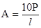
где Р - устойчивость (разрушающая нагрузка), Н;
l - условная пластичность, 0,1 мм.
Устойчивость, условные пластичность и жесткость вычисляют как среднее арифметическое испытаний трех образцов. Расхождение между результатами испытаний отдельных образцов не должно превышать 10%.
Таблица 15
|
Поправочный коэффициент |
Высота образца, см |
Поправочный коэффициент |
|
|
2,9 |
4,55 |
5,80 |
1,17 |
|
3,0 |
4,17 |
6,00 |
1,10 |
|
3,5 |
3,33 |
6,20 |
1,04 |
|
4,0 |
2,50 |
6,35 |
1,00 |
|
4,4 |
1,92 |
6,40 |
0,98 |
|
4,8 |
1,67 |
6,80 |
0,94 |
|
5,4 |
1,32 |
7,00 |
0,85 |
|
5,6 |
1,22 |
7,20 |
0,82 |
7.5. Сущность нестандартного метода определения морозостойкости заключается в оценке потери прочности асфальтобетона после многократного попеременного замораживания и оттаивания образцов.
Образцы приготавливают в соответствии с ГОСТ 12801-84. На трех из них определяют предел прочности при сжатии при 20°С, оставшиеся три образца подвергают водонасыщению в условиях вакуума, а затем попеременному замораживанию и оттаиванию в течение заданного количества циклов, например 25, 50 или более. Каждый цикл включает 4-часовое замораживание в морозильной камере при температуре минус 20°С и 4-часовое оттаивание в воде при комнатной температуре.
После завершения последнего цикла определяют предел прочности при сжатии при 20°С в соответствии с ГОСТ 12801-84.
Коэффициент морозостойкости Кмрз определяют с точностью до 0,01 по формуле
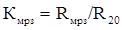
где Rмрз и R20 - средний предел прочности при сжатии образцов соответственно после испытания и до испытания на морозостойкость МПа.
7.6. Количественный метод. Показатель сцепления определяют по методу красителей. В качестве красителя используют метиленовый голубой, обладающий способностью избирательно адсорбироваться на поверхности минерального материала, не покрытого пленкой вяжущего, неадсорбируясь на самом вяжущем. Количественная оценка проводится на органоминеральной смеси после полного цикла испытаний в соответствии с ГОСТ 11508-74.
Приготавливают водный раствор красителя концентрации 0,1 или 0,01 мг/мл в зависимости от удельной поверхности минерального материала.
В конические колбы отвешивают по 8,5 г органоминеральной смеси, испытанной по ГОСТ 11508-74, и исходного минерального материала, на основе которого приготовлена органоминеральная смесь, с точностью до 0,01 г. Затем в колбы вливают раствор метиленового голубого и с помощью прибора встряхивают содержимое. Раствор красителя после этого сливают.
Концентрацию раствора метиленового голубого определяют с помощью прибора ФЭК-56. По предварительно полученной калибровочной кривой зависимости оптической плотности от концентрации метиленового голубого (светофильтр № 4) устанавливают концентрацию (мг/мл) красителя до адсорбции (С1) и после нее (С2).
Величину адсорбции красителя qn (мг/г) вычисляют по формуле
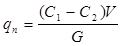
где V - объем красителя, мл;
Q - навеска органоминерального материала, г.
За величину адсорбции принимают среднее арифметическое результатов испытания трех образцов; расхождение между ними не должно превышать 5%.
По величине избирательной адсорбции вычисляют относительную площадь поверхности минерального материала S0 (%), не покрытую вяжущим:
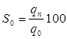
где q0 - величина адсорбции на исходном минеральном материале, мг/г.
Площадь поверхности минерального материала, покрытую вяжущим, Sn рассчитывают по формуле
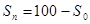
Если поверхность покрыта вяжущим на 90 - 100%, то считается, что вяжущее выдерживает сцепление по образцу № 1, а если на 75 - 90%, то по образцу № 2 в соответствии с ГОСТ 11508-74.
7.7. Визуальный метод. Сцепление оценивают по площади поверхности минерального материала, на которой сохранилась пленка вяжущего после кипячения в дистиллированной воде.
Испытания проводят на щебне крупнее 10 мм или смесях с максимальным размером зерен 10 или 5 мм.
Минеральные материалы перед обработкой битумом промывают дистиллированной водой и сушат в сушильном шкафу при температуре 105-110°С до постоянной массы, затем их и битум нагревают до температуры, выбранной с учетом марки битума по табл. 9.
Отдельно взятую щебенку крупнее 10 мм обвязывают проволокой, выдерживают в течение 1 ч в сушильном шкафу при выбранной температуре, затем погружают на 15 с в вяжущее, нагретое до рабочей температуры. Щебенку извлекают из вяжущего и подвешивают за проволоку, чтобы оно стекло.
Для определения сцепления вяжущего с минеральным материалом с размером зерен менее 10 (или 5) мм готовят смесь из 60-100 г промытого и высушенного минерального материала и 1,5 - 2,5 г (или 2,7 - 4,5 г) вяжущего, предварительно выдержанных в сушильном шкафу в течение 20 мин при выбранной температуре. Затем оба компонента тщательно перемешивают.
Часть смеси (30 - 50 г) или несколько щебенок, обработанных вяжущим, оставляют для последующего сравнения, другую часть материалов испытывают, погружая в кипящую воду (смесь - на металлической сетке, а отдельно взятые щебенки - на проволоке), и выдерживают в ней в течение 30 мин при применении вязких вяжущих и 3 мин - жидких. Затем образцы извлекают из воды, охлаждают в воде и переносят на фильтровальную бумагу для высушивания.
Высушенные образцы сравнивают с исходными. Если поверхность образцов после кипячения полностью покрыта вяжущим, то сцепление оценивается как хорошее, на 3/4 - удовлетворительное, менее чем на 3/4 - плохое. Неравномерность толщины пленки вяжущего не снижает оценки сцепления.
7.8. Старение органических вяжущих оценивают по времени достижения ими максимальной величины когезии при прогреве в тонком слое.
На одну из обезжиренных парных металлических пластинок берут навеску предварительно обезвоженного и процеженного через металлическое сито вяжущего массой 0,025 г с точностью до 0,0002 г. Обе пластинки помещают на 5-7 мин в сушильный шкаф, температура в котором обеспечивает расплавление вяжущего. Затем вяжущее равномерно растирают между попарно притертыми пластинками.
Для определения исходной когезии пластинки складывают попарно и прижимают. После остывания при комнатной температуре пластинки помещают под нагрузку 20 Н на 2 ч для полного склеивания.
При определении старения несколько пластинок с растертым на них вяжущим помещают в сушильный шкаф с температурой, соответствующей температуре приготовления органоминеральной смеси, выдерживают в нем заданное время (2, 4, 6 ч и т.д.), после чего пластинки склеивают попарно и после остывания при комнатной температуре помещают под нагрузку 20 Н на 2ч. Склеенные пластинки устанавливают в гнездо когезиометра между верхней подвижной и нижней неподвижной колодками, закрепляют и выдерживают при рабочей температуре в течение 30 мин. Затем подготавливают к работе когезиометр: уравновешивают плечо, регулируют подачу воды со скоростью 200 мл/мин, стрелку индикатора устанавливают на нулевое деление.
Под влиянием приложенного усилия подвижная пластинка смещается. В процессе испытания замеряют время каждого полного оборота стрелки индикатора, что соответствует сдвигу пластинки на 1 мм.
За расчетное принимают время, за которое скорость сдвига становится равной или превышает 0,1 мм/с, т. е. стрелка индикатора проходит один полный оборот менее чем за 10 с.
После окончания испытания пластинки извлекают из гнезда.
За величину когезии К (Па) принимают напряжение сдвига при расчетном времени:
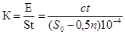
где с - приращение нагрузки за 1 мин; С = 2×20 Н/мин = 40 Н/мин;
20 - отношение плеч рычага;
t - расчетное время, мин;
S0 - площадь пластинки, см2;
0,5 - площадь смещения пластинки за полный оборот стрелки индикатора, см2;
п - число полных оборотов стрелки индикатора до разрушения образца.
За величину когезии принимают среднее арифметическое из двух параллельных определений; расхождение между ними не должно превышать 10%.
По полученным величинам когезии строят график ее зависимости от времени прогрева. Время достижения максимальной когезии принимают за время старения (рис.17).
Рис. 17. Кинетика старения вяжущего
7.9. Сущность метода заключается в оценке характера изменения прочности и водостойкости исследуемого асфальтобетона в результате длительного прогрева. Старение асфальтобетона оценивают по времени достижения максимальных значений показателя прочности при сжатии при 20 или 50°С и коэффициента водостойкости при длительном водонасыщении.
Образцы асфальтобетона, изготовленные в соответствии с ГОСТ 12801-84 из горячих теплых или холодных смесей, прогревают в термошкафу при температуpax соответственно 160, 140 и 90°С. Количество образцов должно быть достаточным для построения графиков экстремальных зависимостей показателей свойств асфальтобетона от времени прогрева.
После заданного времени прогрева (например, 6, 12, 18 ч и т.д.) образцы испытывают в соответствии с вышеупомянутым ГОСТом и строят график зависимости, который сопоставляют с аналогичным графиком для эталонного образца асфальтобетона.
7.10. Прочностные и деформационные характеристики асфальтобетона при изгибе определяют механическими испытаниями образцов-балочек при заданной температуре и различном режиме нагружения.
Образцы-балочки размером 40´40´160 мм изготавливают из асфальтобетонных смесей с максимальным размером зёрен 10 мм в стальных формах (рис. 18,а).
Форму и вкладыши нагревают до температуры 90-100°С и обтирают тканью, слегка смоченной в масле или керосине. На нижний вкладыш насаживают форму на глубину 1 см до упора на поддерживающие подкладки.
В форму помещают навеску горячей асфальтобетонной смеси, штыкуют ее стальным стержнем и тщательно разравнивают. Затем в форму вставляют верхний вкладыш и смесь уплотняют. В процессе уплотнения обеспечивают двустороннее приложение нагрузки с передачей давления на смесь через два вкладыша, имеющие возможность свободно передвигаться навстречу друг другу (рис.18,б). Песчаные и мелкозернистые смеси типа В уплотняют на гидравлическом прессе статической нагрузкой 40 МПа в течение 3 мин. Смеси типов А и Б рекомендуется сначала уплотнять на виброплощадке, а затем доуплотнять статической нагрузкой аналогично уплотнению цилиндрических образцов из многощебенистых смесей по ГОСТ 12801-84.
Готовый уплотненный образец выжимают из формы с помощью выжимного приспособления, например скобы (рис. 18,в), и переносят на стальном поддоне к месту хранения. Плотность готовых образцов-балочек должна соответствовать плотности стандартных цилиндрических образцов, изготовленных из той же смеси по ГОСТ 12801-84.
Изготовленные образцы до испытания выдерживают при комнатной температуре 12-42 ч. Перед испытанием определяют среднюю плотность, пористость минерального остова и остаточную пористость образцов.
Из одной и той же смеси приготавливают не менее трех образцов для каждого вида испытания.
Рис. 18. Схема пресс-формы для изготовления
(а), уплотнения (б) и выдавливания (в) образца:
1 и 2 - верхний и нижний вкладыши; 3 -
форма; 4 и 5 - верхняя и нижняя плиты пресса; 6 - подставка; 7 - образец; 8 -
скоба
Допускается уплотнять асфальтобетонные смеси трамбованием по методу Маршалла (см. п.7.4) и на специальном секторном прессе (рис. 19), который моделирует процесс уплотнения катками.
Образцы на секторном прессе готовят следующим образом. Подогретую до температуры 90-100°С форму устанавливают на тележку и заполняют смесью. Вращением штурвала рычаг опускают до соприкосновения секторного прессующего элемента со смесью. После включения тележке и установленной на ней форме сообщается возвратно-поступательное движение с частотой 40-60 циклов в минуту, а прессующий элемент осуществляет колебательное движение за счет трения об уплотняемую смесь.
Продолжая вращать штурвал, опускают рычаг, при этом одно его плечо сжимает пружину, а другое увеличивает уплотняющую нагрузку на смесь. С помощью индикатора задают степень сжатия пружины и соответственно величину уплотняющей нагрузки. Стабильность нагрузки обеспечивают периодическим вращением штурвала так, чтобы положение стрелки индикатора было близким заданному. Если стрелка перестает отклоняться, то образец достиг требуемой плотности. В среднем для этого необходимо 20-30 циклов уплотнения расчетной нагрузкой 0,8 - 1,2 кН.
Вращая штурвал в обратную сторону, поднимают рычаг и извлекают прессующий элемент из формы.
При целесообразности двустороннего уплотнения образцов форму переворачивают и в такой же последовательности производят их доуплотнение нагрузкой, примерно в 2 раза меньшей.
Рис. 19. Секторный пресс для изготовления
асфальтобетонных образцов:
1 - электродвигатель; 2 - маховик; 3 -
шатун; 4 - двуплечий рычаг; 5 - штурвал; 6 и 12 - буртики винта; 7 - индикатор;
8 - тарированная спиральная пружина; 9 и 10 - стойки; 11 - винт; 13 -
станина; 14 - форма; 15 - прессующий элемент; 16 -
тележка
Перед испытанием образцы, выдерживают при заданной температуре в течение 1,5 ч. Затем в центре нижней плиты механического пресса устанавливают приспособление для испытания образцов на изгиб, которое укладывают боковой гранью на две опоры.
Стальную накладку для передачи нагрузки устанавливают на верхнюю поверхность образца-балочки в середине пролета, включают электродвигатель пресса и нагружают образец с заданной скоростью деформирования. Для удобства центровки образца и накладки относительно опор целесообразно делать на образцах разметку цветным карандашом.
Максимальное показание силоизмерителя принимают за разрушающую нагрузку.
Предел прочности на растяжение при изгибе 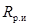
при центральном приложении нагрузки
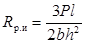
при П-образном приложении нагрузки
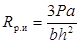
где Р - разрушающая нагрузка, МН;
l - расстояние между опорами (пролет), м;
b, h - соответственно ширина и высота образца-балочки, м;
а - расстояние от опоры до ближнего ребра П-образной накладки, м.
За результат принимают среднее арифметическое значение показателей, полученных при испытании трех образцов. Расхождение по испытаниям отдельных образцов не должно превышать 15%.
7.12. Модуль упругости асфальтобетона определяют на маятниковом приборе Госдорнии. Принцип работы прибора и описание метода приведены в "Инструкции по проектированию дорожных одежд нежесткого типа" ВСН 46-83 (М., 1985). Сущность метода заключается в определении соотношения между величинами нагрузок и деформации образца-балочки при времени действия нагрузки 0,05 - 0,20 с.
Перед испытаниями задают величину изгибающей нагрузки, равной 0,2 - 0,4 разрушающей (в случае П-образного нагружения): для плотного асфальтобетона - 0,4 - 0,6 кН при температуре 10°С и выше, 0,8 - 1,0 кН - при 0°С и ниже; для пористого и высокопористого асфальтобетона нагрузку уменьшают в 1,5 - 2 раза.
Модуль упругости Е (МПа) рассчитывают по формуле
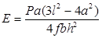
где Р - величина заданной нагрузки, МН;
f - упругий прогиб образца, м.
7.13. Величину прогиба и время разрушения образца асфальтобетона определяют под действием нагрузок с заданным режимом действия.
Перед испытанием образцы выдерживают не менее 1,5 ч в термостатирующем устройстве при заданной температуре, а затем помещают в испытательную камеру на две опоры, удаленные друг от друга на расстояние 13 - 14 см. Нагрузку на образец передают по центру образца через устройство нагружения, соединенное с рычагом пресса (рис. 20).
Рис. 20. Схема испытаний на рычажном прессе.
1 - балка 40´40´160 мм; 2 - опора; 3 - камера
термостатирования; 4 - рычаг пресса; 5 - индикатор
Ножка индикатора перемещений должна упираться в центр нижней грани образца.
Нагружают образец гирями, подвешенными к рычагу пресса.
При испытании возрастающей нагрузкой образец нагружают ступенями с шагом 20 Н через каждые 15 с.
При постоянном или циклическом нагружении рекомендуется принимать нагрузку, составляющую 0,6 - 0,8 разрушающей (см. п. 7.11).
В процессе испытания асфальтобетонного образца-балочки фиксируют: нагрузку и деформацию прогиба через определенные промежутки времени, а также время с момента нагружения образца до его разрушения или количество циклов приложения нагрузки до момента разрушения.
По результатам испытания строят графики зависимости нагрузка - деформация, деформация - время и определяют предельные разрушающую нагрузку и деформацию, а также время до разрушения образцов.
Предельное растягивающее напряжение определяют по формулам (13) и (14), а предельную относительную деформацию Eпp образцов при изгибе - по формуле
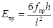
где f - максимальная величина прогиба образца в момент разрушения, мм.
По результатам испытания образцов при циклическом нагружении определяют коэффициент усталости m:
, (17)
где P1, Р2 - заданные нагрузки, прикладываемые к образцам в циклическом режиме;
n1, n2 - количество циклов приложения соответствующей нагрузки до разрушения образца.
При испытании образов под действием постоянной нагрузки определяют коэффициент пластичности r:
, (18)
где t1, t2 - время до разрушения образцов-балочек при заданной нагрузке.
Количество циклов и время до разрушения определяют как среднее геометрическое результатов испытания не менее трех образцов в одинаковых условиях.
7.14. Сущность метода заключается в определении нагрузки, необходимой для разрушения образца вдавливанием штампа, и величины деформации образца до разрушения.
Для испытания готовят образцы диаметром и высотой 101 мм в соответствии с ГОСТ 12801-84. Перед испытанием образцы выдерживают 1 ч в водяной бане при, температуре (50±2 )°С.
Предел прочности и деформацию при вдавливании штампа определяют на прессах с механическим приводом при скорости деформирования 3,0±0,5 мм/мин. Допускается использование прессов с гидравлическим приводом, на которых перед испытанием следует установить указанную выше скорость холостого хода поршня. Силоизмеритель пресса должен обеспечивать получение показателей с погрешностью не более ±3%. Схема испытания приведена на рис. 21.
Рис. 21. Схема испытания вдавливанием штампа:
1 - испытуемый образец; 2 и 4 - нижняя и верхняя
плиты пресса; 3 - штамп; 5 - штанги пресса; 6 - индикатор
Для измерения деформации индикатор, прикрепленный к штанге пресса, устанавливают таким образом, чтобы подвижная часть его ножки касалась нижней плиты пресса.
Образец извлекают из водяной бани и помещают в середину нижней плиты пресса. В центр образца устанавливают металлический штамп диаметром и высотой 50,5 мм, затем опускают верхнюю плиту и устанавливают ее выше поверхности штампа на 1,5-2,0 мм. После этого включают электродвигатель пресса и нагружают образец. Когда стрелка силоизмерителя отклонится от нулевой точки, фиксируют первый отсчет по индикатору.
Максимальное показание силоизмерителя принимают за разрушающую нагрузку и берут второй отсчет по индикатору.
Предел прочности при вдавливании штампа Rш (Па) вычисляют по формуле
, (19)
где Sш - площадь штампа, м2; Sш = 0,002 м2.
Относительную деформацию при вдавливании штампа E определяют по формуле
, (20)
где б1, б2 - соответственно первое и второе показания индикатора;
dш - диаметр штампа, мм.
За окончательную величину принимают среднее арифметическое результатов испытания трех образцов. Расхождение между ними не должно превышать 10%.
7.15. Сущность метода "структурной реологии" состоит в определении таких свойств дисперсных систем, как прочность, вязкость, упругость, пластичность и эластичность при деформировании образца в условиях установившегося режима течения. Получаемый комплекс реологических характеристик, инвариантных по отношению к условиям деформирования и имеющих конкретный физический смысл, позволяет оценить свойства материалов и получить научно обоснованное представление о процессах структурообразования и типах дисперсных структур в них.
Реологические характеристики могут быть получены в режиме постоянного напряжения (рис. 22) или в режиме постоянного градиента скорости (рис. 23) на приборах, обеспечивающих чистый сдвиг (между коаксиальными цилиндрами), простой сдвиг (между плоскопараллельными пластинками), одноосное растяжение, растяжение при изгибе (изгиб балочки, свободно лежащей на двух опорах под нагрузкой, распределенной в средней трети или сосредоточенной в центре пролета).
Рис. 22. Кривая ползучести
Рис. 23. Кинетика сопротивления сдвигу
Для испытания вяжущих наиболее пригодны следующие приборы: пластометр, когезиометр, прибор Толстого, прибор Вейлера-Ребиндера-Сегаловой, ротационный вискозиметр Воларовича РВ-8, Реотест-2, микровискозиметр Союздорнии и другие приборы аналогичной конструкции.
Для испытания асфальтобетона можно использовать сдвиговой когезиометр Союздорнии или упругомер, асфальтобетонных смесей - приборы типа Вейлера-Ребиндера-Сегаловой и Воларовича.
Эксплуатационные характеристики вяжущих и асфальтобетонов, определяемые в области напряжений Р, которые меньше динамического предела текучести Rкг и при градиентах скорости » l×10-6 c-1, получают преимущественно на приборах, обеспечивающих Pi = const.
Технологические характеристики вяжущих и асфальтобетонных смесей, определяемые в области больших Pi и , устанавливают в основном на приборах, обеспечивающих = const.
Испытания проводят в соответствии с прилагаемой к прибору инструкцией.
Ниже приведены общие сведения по методике определения реологических характеристик.
Режим Pi = const.
На первом этапе снимают показания величины деформации в зависимости от времени действия нагрузки и строят серию кривых ползучести (см. рис. 22) для шести и более различных возрастающих значений Pi. При этом минимальная нагрузка Fi должна не менее чем в 2 раза превышать собственную силу трения F0 в приборе. Если в течение 2 ч деформации не обнаружено, то Fi следует увеличивать до ее появления. Условно-мгновенная деформация определяется как среднее арифметическое 3 - 5 приложенных и мгновенно снятых нагрузок. Испытание (замер и запись деформации) заканчивают после того, как остановится стационарный режим течения, т. е. приращение деформации за равные промежутки времени будет практически одинаковым.
Из кривой ползучести определяют графически равновесную деформацию em, и условно-мгновенную e0 (см. рис. 22) и рассчитывают градиент скорости (с-1) по следующей формуле:
, (21)
где Dei - приращение деформации с постоянной скоростью ползучести на прямом участке кривой, мм;
Dt - промежуток времени, за который достигнуто Dei,с;
a - толщина образца, мм.
Если необходимо сопоставить свойства материалов при точно заданных Р, что может иметь место для строго определенных условий эксплуатации, то по одной кривой ползучести можно рассчитать следующие характеристики:
эффективную вязкость hi (Па×с) по формуле
напряжение сдвига Pi (Па) по формуле
; (23)
где F - нагрузка, Н;
S - площадь пластин, м2;
эффективный условно-мгновенный модуль упругости G (Па) по формуле
; (24)
эффективный равновесный модуль упругости Gmi (Па) по формуле
; (25)
эффективную равновесную податливость Jmi (Па-1 ) по формуле
; (26)
эффективный период релаксации q0i (с) быстрорелаксирующих напряжений, вызванной упругими деформациями, образовавшимися за время действия нагрузки, равное или меньше 1 с, по формуле
; (27)
эффективный период релаксации напряжений qmi (с), вызванной всеми упругими деформациями:
; (28)
эффективный показатель эластичности Кmi, (с/Па):
; (29)
эластическую деформацию el (мм):
; (30)
При интерпретации e0, el, em следует учитывать, что e0 характеризует упругие, быстрорелаксирующие высокоэластические деформации с периодом восстановления (ретардации) l0-2×10-3 c, после чего начинают развиваться так называемые "эластические" деформации с периодом ретардации 102-103 с.
Сумма e0 и el составит равновесную задержанную упругую деформацию em, которая полностью восстанавливается после разгрузки.
Режим = const.
Снимают показания величины сопротивления сдвигу в зависимости от времени действия нагрузки и строят серию кривых кинетики сопротивления сдвигу (см.рис.23) для шести и более различных возрастающих значений , изменяющихся в максимально возможном диапазоне. Из кривой кинетики сопротивления сдвигу определяют графически Pi - минимальное установившееся сопротивление сдвигу при данных , а также Рmax как эффективное предельное сопротивление сдвигу.
Если необходимо сопоставить свойства материалов при точно заданных , что может оказаться необходимым для конкретного технологического оборудования, осуществляющего сдвиг материалов (например, перемешивание или уплотнение) с постоянной скоростью, и для условий, обеспечивающих равный уровень разрушения структуры, то из одной кривой кинетики сопротивления сдвигу (см. рис. 23) можно определить эффективную вязкость по формуле (22), а также эффективную степень разрушения yi структуры по формуле
. (31)
Для оценки и сопоставления основных эксплуатационных и технологических свойств упруговязкопластичных материалов (прочности, вязкости, упругости, эластичности, пластичности) или для изучения процессов структурообразования в них необходимо получить серию кривых ползучести и кривых кинетики сопротивления сдвигу. При этом обработка серии кривых, полученных в режиме Pi = const, целесообразна для оценки эксплуатационных свойств, а в режиме = const технологических.
Рис. 24. Реологическая кривая
Получив серию кривых при возрастающих Pi и рассчитав соответствующие (Pi = const) или получив серию кривых при возрастающих и рассчитав соответствующие Pi( = const), строят "кривую течения" или реологическую кривую (рис. 24).
По этой кривой определяют графически и рассчитывают следующие основные реологические характеристики-константы, инвариантные в отношении условий испытания и имеющие определенный физический смысл:
статический (шведовский) предел текучести Рк1 (Па). Определяется графически по началу 1-го участка (при Р<Рк2) реологической кривой, аппроксимированной в виде прямой, и экстраполяцией ее до пересечения с осью абсцисс. Характеризует истинную прочность и предел упругости материала;
динамический (бингамовский) предел текучести Pк2 (Па). Определяется графически по 2-му участку реологической кривой, аппроксимированной в виде прямой (при Р>Рк2), и экстраполяцией ее до пересечения с осью абсцисс. Характеризует предел прочности материала;
наибольшую ньютоновскую вязкость или вязкость практически неразрушенной структуры h0 (Па×с):
(при P<Pк2 и Pк1 = 0); (32)
наибольшую пластическую вязкость (шведовскую) или вязкость условно-неразрушенной структуры h0* (Па×с):
(при P<Pк2 и Pк1 ¹ 0). (33)
Объективность полученных h0 и h0* проверяют по независимости hi (при Р<Рк2) от Рi или . Указанные показатели характеризуют устойчивость материала к образованию необратимых деформаций при длительном действии нагрузок, сопротивление сдвигу и вязкость прослоек его дисперсионной среды между частицами дисперсной фазы при практически неразрушенной структуре материала;
вязкость условно-разрушенной структуры или наименьшую пластическую (бингамовскую) вязкость в условиях чистого сдвига hm* (Па×с) и при простом сдвиге h²m (Па×с):
. (34)
По hm*(h²m) характеризуется пластичность материалов в условиях, когда их пространственная структура разрушена и определяется вязкостью дисперсионной среды и концентрацией частиц дисперсной фазы;
наименьшую ньютоновскую вязкость или вязкость полностью разрушенной структуры hm (Па×с):
(при P>Pк2). (35)
Этот показатель определяется на 3-м участке реологической кривой, который при экстраполяции его на ось абсцисс проходит через начало координат, и характеризует вязкость материала с полностью разрушенной структурой. Может быть получен экспериментально для слабоструктурированных систем. Объективность hm проверяется независимостью hi от Рi или в области Р>Рк2
наименьший равновесный модуль упругости Gm0 (Па) определяется графически в области Р<Рк2 аппроксимацией экспериментальных данных в виде прямой, параллельной оси абсцисс, и экстраполяцией ее до пересечения с осью ординат на графике Gmi = f(Pi). В случае ярко выраженной зависимости Gmi от Рi Gm0 = Gmi при =1×10-6 с-1 из графика Gmi = f();
наибольшую равновесную податливость Jm0 (Па-1):
. (36)
Показатели Gm0 и Jm0 характеризуют способность материала к полностью обратимым упругим деформациям, а также жесткость, упругость и податливость в условиях, когда его структура не разрушена;
периоды релаксации напряжений qm0 или q*m0 (с), вызванных всеми упругими деформациями:
; (37)
. (38)
Характеризуют время, в течение которого материал может упруго деформироваться под нагрузкой до течения, т. е. его работоспособность при неразрушенной структуре;
предельную обратимую деформацию . Определяется графически по кривой emi = f(P) при максимальном значении emi и характеризует максимально возможную деформацию, которую может выдержать данный материал при неразрушенной структуре;
показатели эластичности К0 и (Па-1×с):
; (39)
. (40)
Позволяют дать количественную оценку эластичности материалов и характеризуют упругую податливость за время, равное периоду релаксации напряжений;
степень разрушения структуры y:
; ; . (41)
Характеризует тиксотропные свойства материалов, в частности глубину разрушения их пространственной структуры;
пластичность (по Воларовичу) m (с-1):
; , (42)
характеризующую пластичность вяжущих или асфальтобетонных смесей при разрушенной пространственной структуре.
По реологическим характеристикам можно оценить основные механические свойства вяжущих и асфальтобетонов, обусловливающие соответствующие параметры асфальтобетонных покрытий в процессе их эксплуатации, и технологические особенности асфальтобетонных смесей при приготовлении, хранении, транспортировании и укладке.
Эксплуатационные свойства вяжущих и асфальтобетонов можно оценить по комплексу следующих характеристик: наибольшей пластической или ньютоновской вязкости, равновесному и условно-мгновенному модулю упругости или податливости, статическому и динамическому пределам текучести, периоду релаксации напряжений, показателю эластичности.
Технологические свойства вяжущих и асфальтобетонных смесей определяются по наименьшей пластической или бингамовской вязкости, пластичности, степени разрушения структуры.
Указанные характеристики позволяют оценить следующие свойства вяжущих, асфальтобетонов и покрытий:
наибольшую пластическую или ньютовскую вязкость - устойчивость к образованию пластических сдвигов (волн, наплывов, колей) на покрытиях, поперечных и продольных уклонах под действием стоящего, тормозящего и двигающегося автомобиля; позволяет учесть накопление необратимых пластических деформаций и прогнозировать образование неровностей;
статический и динамический пределы текучести - напряжения (давление колеса автомобиля), при которых можно ожидать интенсивное образование пластических сдвигов, а также предельно допустимые сдвигающие напряжения в асфальтобетоне покрытия, обеспечивающие требуемую ровность в процессе эксплуатации;
равновесный модуль упругости и податливость - способность к упругим (обратимым) деформациям при кратковременном (менее 1 с) (G0) и длительном (Gm0) воздействиях нагрузки; позволяют прогнозировать образование пластического сдвига или наплывов на покрытии при положительных или трещины при отрицательных температурах и при известном в данных условиях напряжении;
период релаксации напряжений - способность материала покрытия к внутриструктурным перемещениям, способствующим снижению возникающих напряжений. Haпример, если период релаксации напряжений больше времени действия нагрузки, то в материале покрытия образуется необратимая деформация (трещины или сдвиг);
показатель эластичности - устойчивость к многократным динамическим воздействиям, способность к большим по величине упругим (обратимым) деформациям;
наименьшую пластическую или бингамовскую вязкость - температуру, при которой вязкость вяжущего составляет 0,3 - 0,7 Па×с, что является оптимальным для приготовления асфальтобетонной смеси; удобоукладываемость и удобообрабатываемость асфальтобетонных и других органоминеральных смесей; сопротивление сдвигу асфальтобетонной смеси с целью совершенствовать рабочие органы асфальтоукладчика или разработать новые и оценить возможности его применения для работы со смесями новых типов;
степень разрушения структуры и пластичность по Воларовичу - оптимальный температурный режим уплотнения асфальтобетонных смесей.
За величину реологической характеристики при заданной температуре принимают среднее арифметическое результатов трех определений. Расхождение между ними не должно превышать 10% среднего арифметического сравниваемых результатов.
7.16. Сущность метода состоит в определении способности ПБВ к обратимым деформациям, устанавливаемой по сокращению длины образца, предварительно растянутого до разрыва.
Эластичность Э (%) ПБВ определяют сразу после испытания образца на растяжимость при 25°С и рассчитывают по формуле
, (43)
где Д25 - растяжимость, см;
3 - константа прибора, см;
l1 - сумма длин двух частей образца (по последнему замеру), см.
После разрыва измеряют длину каждой части образца с точностью до 1 мм. Далее измерения проводят через каждые 5 мин до тех пор, пока длина каждой части образца не перестанет изменяться.
Для ускорения испытания температуру воды в дуктилометре следует повысить до 35°С.
Расхождение между тремя параллельными определениями не должно превышать 10%.
7.17. Испытания выполняют методом адсорбционно-хроматографического анализа, сущность которого заключается в разделении органических вяжущих селективно действующими растворителями и адсорбентами на ряд условных фракций: парафино-нафтеновые, моноцикло-, бицикло- и полициклоароматические углеводороды, петролейно-, спиртобензольные смолы и асфальтены. Полученные данные позволяют выявить природу и количественное соотношение компонентов вяжущих.
Испытания проводят в следующем порядке. Навеску вяжущего массой 3 - 5 г (с точностью до 0,0002 г) помещают в колбу и растворяют в 6 - 10 мл бензола. Затем колбу с раствором вяжущего кипятят на песчаной бане в течение 5 - 7 мин, после чего колбу охлаждают до комнатной температуры и наливают в нее небольшими порциями при постоянном перемешивании 40-кратное количество (по отношению к навеске) петролейного эфира 40 - 60 согласно ТУ 6-02-1244-83. Колбу оставляют на сутки в темном месте для осаждения асфальтенов, которые затем отфильтровывают через двойной плотный фильтр. Фильтрат и асфальтены, смытые с фильтра бензолом, собирают в разные колбы. Из колбы с асфальтенами отгоняют растворитель до получения кашицообразной массы, охлаждают, вновь наливают петролейный эфир (около 150 мл) и оставляют колбу вновь на сутки в темном месте для повторного осаждения асфальтенов. По истечении этого времени асфальтены отфильтровывают и тщательно промывают петролейным эфиром.
Рис. 25. Колонка для адсорбционной хроматографии
Остаток асфальтенов на фильтре смывают горячим бензолом в колбу, бензол отгоняют, асфальтены высушивают до постоянной массы при температуре 80±1°С, охлаждают, и взвешиванием определяют их массу.
Фильтр также доводят до постоянной массы; привес фильтра соответствует содержанию карбенов, карбоидов и механических примесей.
Далее подготавливают образец для фракционирования на хроматографической колонке (рис. 25). Для этого от фильтра, собранного в колбу после двух отмывок асфальтенов, отгоняют растворитель до получения кашицеобразной массы. Затем содержимое колбы охлаждают и растворяют в 25 мл петролейного эфира.
На кусочек ваты, помещенный в низ хроматографической колонки, засыпают свежий силикагель марки АСК фракции 0,25 - 0,50 мм (ГОСТ 3956-76). Количества силикагеля составляет 200 - 250 г, что должно обеспечить полную адсорбцию смол. Уплотнение производят постукиванием по колонке двумя резиновыми грушами. После ее заполнения на слой силикагеля кладут ватный тампон.
Силикагель смачивают петролейным эфиром (для снятия теплоты адсорбции), для чего заливают его в количестве 250 - 300 мл в колонку при открытом кране (см. рис. 25). Скорость прохождения растворителя по колонке должна быть 300 - 500 мл/ч. После этого в колонку заливают подготовленный фильтрат, содержащий масла (углеводороды) и смолы.
Для разделения образца на фракции в колонку заливают последовательно ряд растворителей, масса которых зависит от массы вяжущего. Если масса навески вяжущего составляет 5 г, то количество растворителей и их смесей составит:
петролейного эфира - 200 мл;
95% петролейного эфира и 5% бензола - 200 мл;
90% петролейного эфира и 10% бензола - 200 мл;
85% петролейного эфира и 15% бензола - 200 мл;
80% петролейного эфира и 20% бензола - 200 мл;
75% петролейного эфира и 25% бензола - 200 мл;
70% петролейного эфира и 30% бензола - 200 мл;
бензола - в количестве, необходимом для появления бесцветных капель на выходе из колонки;
спиртобензола (в соотношении 1:1) - около 950 мл (до стекания бесцветных капель).
Отбор фракций производят непрерывно в отдельные тарированные колбочки (вместимостью 50 и 150 мл) следующим образом:
первые 20 мл раствора могут быть использованы для промывки колбы, в которой находился фильтрат. Затем отбирают 8 - 10 колб по 10 - 15 мл, 10 - 12 колб - по 25 мл и остальные - по 50 мл.
При прохождении спиртобензола наблюдается движение черного кольца по силикагелю; эту фракцию следует отобрать в отдельную колбу.
Растворители отгоняют от углеводородов и смол, помещая колбы на водяную баню, колбы с продуктом высушивают при 80±1°С до постоянной массы в термостате (вакуумтермостате), после чего определяют коэффициент рефракции продукта в каждой отдельной колбе.
Полученные при адсорбционном разделении фракции суммируются в отдельные группы в зависимости от коэффициента рефракции.
Фракции с коэффициентом рефракции до 1,49 относят к парафино-нафтеновым углеводородам (ПН), от 1,49 до 1,53 - к моноциклоароматическим (МЦА), от 1,53 до 1,59 - к бициклоароматическим (БЦА), от 1,59 и выше - к полициклоароматическим (ПЦА).
Фракции, десорбируемые бензолом и спиртобензолом, сильно окрашены, имеют твердую консистенцию, поэтому определить их коэффициент рефракции не удается. Фракцию, десорбируемую бензолом, относят к петролейно-бензольным смолам (ПБС), а фракцию, десорбируемую спиртобензолом, - к спиртобензольным смолам (СБС).
После проведения десорбции колонку освобождают от силикагеля, промывают петролейным эфиром и высушивают.
Расхождение между результатами двух параллельных анализов не должно превышать ±1%.
Форма 1
Журнал испытаний жидких битумов
|
Число и месяц |
Марка битума |
Завод-изготовитель, дата поступления |
Откуда взят образец |
Вязкость по стандартному вискозиметру, с |
Количество испарившегося разжижителя, % |
Температура размягчения остатка после определения количества испарившегося разжижителя, °С |
Температура вспышки, определяемая в открытом тигле, °С |
Сцепление с мрамором или песком |
Подпись ответственного лица |
Замечание и подпись представителя технадзора и вышестоящих организаций |
|
1 |
2 |
3 |
4 |
5 |
6 |
7 |
8 |
9 |
10 |
11 |
Форма 2
Журнал испытаний вязких битумов
|
Число и месяц |
Марка битума |
Завод-изготовитель, дата поступления |
Откуда взят образец |
Глубина проникания иглы, 0,1 мм, при температуре, °С |
Растяжимость, см, при температуре, °С |
Температура размягчения по КиШ, °С |
Изменение температуры размягчения после прогрева, °С |
Температура хрупкости, °С |
Сцепление с минеральной частью асфальтобетонной смеси |
Температура вспышки, °С |
Индекс пенетрации |
Подпись ответственного лица |
Замечания и подпись представителя технадзора и вышестоящих организаций |
|||
|
25 |
0 |
|||||||||||||||
|
25 |
0 |
|||||||||||||||
|
1 |
2 |
3 |
4 |
5 |
6 |
7 |
8 |
9 |
10 |
11 |
12 |
13 |
14 |
15 |
16 |
|
Форма 3
Журнал испытаний щебня, песка, гравия
|
Номер партии и место отбора проб (вагон, штабель, карьер) |
Дата испытания |
Материал и его происхождение |
Массовая доля, %, зерен мельче данного размера, мм |
Влажность, % массы |
Содержание примесей, % массы |
Содержание зерен, % массы |
Плотность г/см3 |
Модуль крупности песка |
Пористость, % объема |
Пустотность (объем межзерновых пустот), % |
Водопоглощение, % массы |
Прочность, характеризуемая |
Морозостойкость при испытании |
Подпись ответственного лица |
Примечание |
||||||||||||||||||||
|
замораживанием |
в растворе |
||||||||||||||||||||||||||||||||||
|
Количество циклов |
Потери массы, % |
Количество циклов |
Потери массы, % |
||||||||||||||||||||||||||||||||
|
потерей массы, %, при испытании в полочном барабане (марка) |
потерей массы, %, при испытании в цилиндре (марка) |
||||||||||||||||||||||||||||||||||
|
40 |
20 |
15 |
10 |
5 |
2,5 |
1,25 |
0,63 |
0,315 |
0,16 |
0,071 |
истинная (без пор) |
средняя (включая поры) |
Насыпная (включая поры и межзерновые пустоты) |
||||||||||||||||||||||
|
пылевидных, глинистых и илистых |
глины в комках |
органических |
пластинчатой и игловидной формы |
слабых пород |
|||||||||||||||||||||||||||||||
|
1 |
2 |
3 |
4 |
5 |
6 |
7 |
8 |
9 |
10 |
11 |
12 |
13 |
14 |
15 |
16 |
17 |
18 |
19 |
20 |
21 |
22 |
23 |
24 |
25 |
26 |
27 |
28 |
29 |
30 |
31 |
32 |
33 |
34 |
35 |
|
Форма 4
Журнал испытаний минерального порошка
|
Дата |
Номер анализа |
Вид минерального порошка, завод-изготовитель |
Завод-изготовитель |
Массовая доля, %, зерен мельче данного размера, мм |
Плотность, г/см3 |
Пористость, % объема |
Набухание образцов из смеси порошка с битумом, % объема |
Коэффициент водостойкости образцов из смеси порошка с битумом |
Показатель битумоемкости, г |
Однородность |
Гидрофобность |
Влажность, % массы |
Подпись |
|||||||
|
ответственного лица |
начальника лаборатории |
|||||||||||||||||||
|
в уплотненном состоянии |
истинная |
|||||||||||||||||||
|
1,25 |
0,63 |
0,315 |
0,16 |
0,071 |
||||||||||||||||
|
1 |
2 |
3 |
4 |
5 |
6 |
7 |
8 |
9 |
10 |
11 |
12 |
13 |
14 |
15 |
16 |
17 |
18 |
19 |
20 |
|
Форма 5
Журнал подбора состава асфальтобетонной смеси и испытания образцов
|
Номер состава и тип смеси |
Состав минеральной части, % массы |
Истинная плотность минеральных материалов, г/см3 |
Содержание битума, % сверх 100% минерального материала |
Марка (глубина проникания иглы при 25°С или вязкость) битума |
Массовая доля, %, зерен мельче данного размера, мм |
Дата |
Размер образцов, см |
Масса сухого образца на воздухе, г |
Масса образца после выдерживания 30 мин в воде, г |
Масса водонасыщенных образцов, г |
|||||||||||||||||||||
|
Щебень |
Щебень |
Щебень |
Песок |
Песок |
Минеральный порошок |
40 |
20 |
10 |
15 |
5 |
2,5 |
1,25 |
0,63 |
0,315 |
0,16 |
0,071 |
приготовления образцов |
испытания образцов |
после вакуума |
После 15 сут водонасыщения |
|||||||||||
|
на воздухе |
в воде |
||||||||||||||||||||||||||||||
|
на воздухе |
в воде |
||||||||||||||||||||||||||||||
|
на воздухе |
в воде |
||||||||||||||||||||||||||||||
|
1 |
2 |
3 |
4 |
5 |
6 |
7 |
8 |
9 |
10 |
11 |
12 |
13 |
14 |
15 |
16 |
17 |
18 |
19 |
20 |
21 |
22 |
23 |
24 |
25 |
26 |
27 |
28 |
29 |
30 |
31 |
|
Продолжение формы 5
|
Объем сухого образца, см3 |
Объем водонасыщенного образца, см3 |
Показатель физико-механических свойств |
Коэффициент водостойкости |
Слеживаемость (по числу ударов) |
Пористость, % объема |
Сцепление битума с минеральной частью |
Подпись отвественного лица |
||||||||||||||||||
|
Средняя плотность, г/см3 |
Водонасыщение, % объема |
Набухание, % объема |
Предел прочности при сжатии, при температуре, °С |
||||||||||||||||||||||
|
Кв |
после прогрева Кпв |
при длительном водонасыщении Квд |
При длительном водонасыщении после прогрева Кпвд |
минерального остова |
остаточная |
||||||||||||||||||||
|
20 |
50 |
0 |
|||||||||||||||||||||||
|
после вакуума |
после 15 сут водонасыщения |
после вакуума |
после 15 сут водонасыщения |
после вакуума |
после 15 сут водонасыщения |
сухого образца R20 |
водонасыщенного образца Rв |
сухого образца после прогрева Rп20 |
водонасыщенного образца после прогрева Rпв |
образца после длительного водонасыщения Rвд |
при длительном водонасыщении после прогрева Rпвд |
сухого образца R50 |
сухого боразца R0 |
||||||||||||
|
32 |
33 |
34 |
35 |
36 |
37 |
38 |
39 |
40 |
41 |
42 |
43 |
44 |
45 |
46 |
47 |
48 |
49 |
50 |
51 |
52 |
53 |
54 |
55 |
56 |
|
Журнал подобранных составов асфальтобетона
|
Минеральный материал (порода, карьера) |
Истинная плотность, г/см3 |
Массовая доля, %, зерен мельче данного размера, мм |
Содержание битума, % массы |
Средняя плотность асфальтобетона, г/см3 |
Показатели физико-механических свойств асфальтобетона |
|||||||||||||||||||||||||||||||
|
Истинная плотность, г/см3 |
Пористость минерального остова, % объема |
Остаточная пористость асфальтобетона, % объема |
Водонасыщение, % объема |
Набухание, % объема |
Предел прочности образца при сжатии, МПа, при температуре, °С |
Коэффициент водостойкости |
Подпись ответственного лица |
|||||||||||||||||||||||||||||
|
40 |
20 |
15 |
10 |
5 |
2,5 |
1,25 |
0,63 |
0,315 |
0,16 |
0,071 |
после вакуума |
после длительного водонасыщения |
после прогрева |
после прогрева и длительного водонасыщения |
||||||||||||||||||||||
|
20 |
50 |
0 |
||||||||||||||||||||||||||||||||||
|
минерального остова |
асфальтобетона |
после вакуума |
после 15 сут водонасыщения |
после вакуума |
после 15 сут водонасыщения |
сухого |
водонасыщенного |
сухого после прогрева |
водонасыщенного после прогрева |
после длительного водонасыщения |
после прогрева и длительного водонасыщения |
сухого |
сухого |
|||||||||||||||||||||||
|
1 |
2 |
3 |
4 |
5 |
6 |
7 |
8 |
9 |
10 |
11 |
12 |
13 |
14 |
15 |
16 |
17 |
18 |
19 |
20 |
21 |
22 |
23 |
24 |
25 |
26 |
27 |
28 |
29 |
30 |
31 |
32 |
33 |
34 |
35 |
36 |
|
|
Щебень |
||||||||||||||||||||||||||||||||||||
|
Песок |
||||||||||||||||||||||||||||||||||||
|
Минеральный порошок |
||||||||||||||||||||||||||||||||||||
|
Состав смеси, %: |
||||||||||||||||||||||||||||||||||||
|
щебень |
||||||||||||||||||||||||||||||||||||
|
песок |
||||||||||||||||||||||||||||||||||||
|
минеральный порошок |
||||||||||||||||||||||||||||||||||||
|
Готовая смесь |
||||||||||||||||||||||||||||||||||||
Форма 7
|
Рецепт на приготовление асфальтобетонной (покрытия, основания) на автомобильной дороге ____________ 1. Применяемые минеральные материалы и их зерновой состав.
2. Состав асфальтобетонной смеси, % массы: щебень _______________ песок _______________ минеральный порошок _________________ битум _______________ 3. Физико-механические показатели асфальтобетона.
|
||||||||||||||||||||||||||||||||||||||||||||||||||||||||||||||||||||||||||||||||||||||||||||
Форма 8
|
Паспорт-накладная на асфальтобетонную смесь « » ___________19___г. Наименование АБЗ, марка смеси ____________________________________________ Смеситель, номер смесителя ________________________________________________ Вид смеси _______________________________________________________________ № автомобиля __________________________ масса ___________ т _______________ Время отгрузки ___________________________________________________________ Температура смеси при отпуске с завода, °С __________________________________ Срок хранения холодной асфальтобетонной смеси _____________________________ Асфальтобетонная смесь соответствует требованиям ГОСТ, ТУ __________________ Объект __________________________________________________________________ Подпись ответственного лица _______________________________________________ Время прибытия к месту укладки ____________________________________________ Температура смеси на месте укладки, °С _____________________________________ Сменный мастер (на месте производства работ) ________________________________ Подпись_________(Фамилия, имя, отчество) |
Форма 9
Журнал приготовления битума
|
Число и месяц |
Номер битумного котла с указанием номера рабочего котла |
Время загрузки котлов |
Температура битума в котле, °С |
Время готовности битума |
Количество битума в котле, т |
Время взятия пробы |
Глубина проникания вязкого, 0,1 мм, или вязкость жидкого битума |
Разжижение |
Переливание |
Подпись ответственного лица |
||||||
|
Разжижитель |
Количество разжижителя, % массы |
Глубина проникания иглы, 0,1 мм, или вязкость готового битума |
Время переливания |
Номер котла |
||||||||||||
|
Начало |
Конец |
Время |
Температура |
Начало |
Конец |
|||||||||||
|
1 |
2 |
3 |
4 |
5 |
6 |
7 |
8 |
9 |
10 |
11 |
12 |
13 |
14 |
15 |
16 |
17 |
Форма 10
Журнал испытания проб асфальтобетонных смесей, взятых из смесителя
|
Номер образца |
Число и месяц испытания |
Смена |
Номер смесителя |
Номер замеса |
Номер состава смеси, тип |
Глубина проникания иглы при 25°С вязкого битума, 0,1 мм, или вязкость жидкого битума |
Результат взвешивания сухого образца на воздухе, г |
Масса образца на воздухе после выдерживания 30 мин в воде, г |
Масса образца в воде после выдерживания 30 мин в воде, г |
Объем сухого образца, см3 |
Масса образца в воде после водонасыщения, г |
Масса образца на воздухе после водонасыщения, г |
Объем водонасыщенного образца, см3 |
Средняя плотность асфальтобетона, г/см3 |
Водонасыщение, % объема |
Набухание, % объема |
Предел прочности при сжатии, МПа, образца |
Показатель слеживаемости холодной асфальтобетонной смеси (по числу ударов) |
Коэффициент водостойкости |
Подпись ответственного лица |
||
|
сухого R20 |
водонасыщенного Rв |
сухого R50 |
||||||||||||||||||||
|
1 |
2 |
3 |
4 |
5 |
6 |
7 |
8 |
9 |
10 |
11 |
12 |
13 |
14 |
15 |
16 |
17 |
18 |
19 |
20 |
21 |
22 |
23 |
Форма 11
Журнал контрольных определений состава асфальтобетонной смеси и асфальтобетона
|
Дата |
Место отбора пробы |
Номер состава |
Номер пробы |
Метод экстрагирования битума |
Заданное содержание битума, % массы |
Масса навески, г |
Продолжительность экстрагирования, ч |
Содержание битума, % массы |
Maссовая доля, %, зерен мельче данного размера, мм |
Подпись ответственного лица |
||||||||||||
|
40 |
20 |
15 |
10 |
5 |
2,5 |
1,25 |
0,63 |
0,315 |
0,16 |
0,071 |
||||||||||||
|
На выходе из смесителя |
Из покрытия |
|||||||||||||||||||||
|
1 |
2 |
3 |
4 |
5 |
6 |
7 |
8 |
9 |
10 |
11 |
12 |
13 |
14 |
15 |
16 |
17 |
18 |
19 |
20 |
21 |
22 |
|
Форма 12
Журнал контроля состава асфальтобетонной смеси ускоренным методом
|
Дата |
Номер образца |
Смена |
Номер смесителя |
Номер замеса |
Номер состава |
Заданное содержание битума, % массы |
Способ определения |
Массовая доля, %, зерен мельче данного размера, мм |
Содержание битума, % массы |
Подпись ответственного лица |
||||||||||
|
40 |
20 |
15 |
10 |
5 |
2,5 |
1,25 |
0,63 |
0,315 |
0,16 |
0,071 |
||||||||||
|
1 |
2 |
3 |
4 |
5 |
6 |
7 |
8 |
9 |
10 |
11 |
12 |
13 |
14 |
15 |
16 |
17 |
18 |
19 |
20 |
21 |
Форма 13
Журнал испытания образцов, взятых из асфальтобетонного покрытия
|
Дата испытания |
Номер образца (керна) |
Место отбора образца |
Дата |
Толщина слоя (верхнего, нижнего), см |
Сцепление с нижним слоем или основанием |
Номер состава асфальтобетонной смеси, тип |
Характеристика образца из покрытия |
Характеристика переформированного образца |
Подпись ответственного лица |
||||||||||||||||||||||||||
|
укладки асфальтобетонной смеси |
взятия вырубки (керна) |
Масса, г |
Объем, см3 |
Средняя плотность, г/см3 |
Водонасыщение, % объема |
Набухание, % объема |
Масса, г |
Объем, см3 |
Средняя плотность асфальтобетона, г/см3 |
Водонасыщение, % объема |
Набухание, % объема |
Предел прочности при сжатии, МПа, при температуре, °С |
Коэффициент водостойкости |
Коэффициент уплотнения покрытия |
|||||||||||||||||||||
|
сухого на воздухе |
на воздухе после 30 мин выдерживания в воде |
в воде после 30 мин выдерживания в воде |
водонасыщенного под вакуумом на воздухе |
Водонасыщенного под вакуумом в воде |
сухого на воздухе |
на воздухе после 30 мин выдерживания в воде |
в воде после 30 мин выдерживания в воде |
водонасыщенного под вакуумом на воздухе |
водонасыщенного в воде |
||||||||||||||||||||||||||
|
сухого |
водонасыщенного под вакуумом |
сухого |
водонасыщенного под вакуумом |
||||||||||||||||||||||||||||||||
|
20 |
50 |
0 |
|||||||||||||||||||||||||||||||||
|
сухого образца R20 |
водонасыщенного образца Rв |
R50 |
R0 |
||||||||||||||||||||||||||||||||
|
1 |
2 |
3 |
4 |
5 |
6 |
7 |
8 |
9 |
10 |
11 |
12 |
13 |
14 |
15 |
16 |
17 |
18 |
19 |
20 |
21 |
22 |
23 |
24 |
25 |
26 |
27 |
28 |
29 |
30 |
31 |
32 |
33 |
34 |
35 |
|
Форма 14
Журнал укладки асфальтобетонной смеси
|
Число, месяц |
Время работы (начало и конец смены) |
Место работы |
Сделано работ |
Расход, т |
Возвращено смеси на завод (брак), т |
Уплотнение |
Качество работ |
Температура воздуха, °С |
Состояние погоды (ясно, ветер, тихо) |
Подпись ответственного лица |
||||||||
|
Начало |
Конец |
|||||||||||||||||
|
км |
ПК |
км |
ПК |
Вид |
Объем, м (м2) |
в нижний слой |
в верхний слой |
Количество катков |
Марка катка |
Ровность, мм |
Ширина, см |
Поперечный уклон, %о |
||||||
|
1 |
2 |
3 |
4 |
5 |
6 |
7 |
8 |
9 |
10 |
11 |
12 |
13 |
14 |
15 |
16 |
17 |
18 |
19 |
ГОСТ 127-76. Сера техническая. Технические условия.
ГОСТ 305-82. Топливо дизельное. Технические условия.
ГОСТ 2477-65. Нефтепродукты. Метод определения содержания воды.
ГОСТ 3344-83. Щебень и песок шлаковые для дорожного строительства. Технические условия.
ГОСТ 3900-85. Нефть и нефтепродукты. Методы определения плотности.
ГОСТ 3956-76. Силикагель технический. Технические условия.
ГОСТ 4333-87. Нефтепродукты. Методы определения температур вспышки и воспламенения в открытом тигле.
ГОСТ 4641-80. Дегти каменноугольные для дорожного строительства. Технические условия.
ГОСТ 7855-84. Машины разрывные и универсальные для статических испытаний металлов и конструкционных пластмасс. Типы, основные параметры. Общие технические требования.
ГОСТ 8267-82. Щебень из природного камня для строительных работ. Технические условия
ГОСТ 8268-82. Гравий для строительных работ. Технические условия.
ГОСТ 8735-88. Песок для строительных работ. Методы испытания.
ГОСТ 8736-85. Песок для строительных работ. Технические условия.
ГОСТ 8905-82. Машины (прессы гидравлические) для статических испытаний строительных материалов на сжатие. Общие технические условия.
ГОСТ 9128-84. Смеси асфальтобетонные дорожные, аэродромные и асфальтобетон. Технические условия.
ГОСТ 9179-77. Известь строительная. Технические условия.
ГОСТ 10178-85. Портландцемент и шлакопортландцемент. Технические условия.
ГОСТ 10260-82. Щебень из гравия для строительных работ. Технические условия.
ГОСТ 11501-78. Битумы нефтяные. Метод определения глубины проникания иглы.
ГОСТ 11503-74. Битумы нефтяные. Метод определения условной вязкости.
ГОСТ 11504-73. Битумы нефтяные. Метод определения количества испарившегося разжижителя из жидких битумов.
ГОСТ 11505-75. Битумы нефтяные. Метод определения растяжимости.
ГОСТ 11506-73. Битумы нефтяные. Метод определения температуры размягчения по Кольцу и Шару.
ГОСТ 11507-78. Битумы нефтяные. Метод определения температуры хрупкости по Фраасу.
ГОСТ 11508-74. Битумы нефтяные. Метод определения сцепления битума с мрамором и песком.
ГОСТ 11510-65. Битумы нефтяные. Метод определения содержания водорастворимых соединений.
ГОСТ 11511-65. Битумы нефтяные. Метод определения водорастворимых кислот и щелочей.
ГОСТ 11512-65. Битумы нефтяные. Метод определения зольности.
ГОСТ 11955-82. Битумы нефтяные дорожные жидкие. Технические условия.
ГОСТ 12801-84. Смеси асфальтобетонные дорожные и аэродромные, дегтебетонные дорожные, асфальтобетон и дегтебетон. Методы испытаний.
ГОСТ 13835-73. Каучук синтетический термостойкий низкомолекулярный СКТН. Технические условия.
ГОСТ 16557-78. Порошок минеральный для асфальтобетонных смесей. Технические условия.
ГОСТ 18659-81. Эмульсии битумные дорожные. Технические условия.
ГОСТ 22245-76. Битумы нефтяные дорожные вязкие. Технические условия.
ГОСТ 23239-78. Кислоты жирные синтетические фракций С5-С6, С7-С9, С5-С9, С9-С10, С10-С13, С10-С16 С12-С16, С17-С20. Технические условия.
ГОСТ 23717-79. Флотамин технический. Технические условия.
ГОСТ 24104-80. Весы лабораторные общего назначения и образцовые. Технические условия.
ГОСТ 25877-83. Смеси дегтебетонные и дегтебетон. Технические условия.
ГОСТ 26193-84. Материалы из отсевов дробления изверженных горных пород для строительных работ. Технические условия.
ГОСТ 16705-80. Установки асфальтосмесительные. Технические условия.
ТУ 38 УССР 201-170-78. Присадка адгезионная БП-3.
ТУ 6-02-795-78. Амины алифатические С17-С20 технические.
ТУ 6-02-1067-81. Коллектор АНП-2.
ТУ 6-02-750-87. Остатки кубовые при производстве аминов C17-C20.
ТУ 113-03-13-30-85. Продукт КОДА.
ТУ 38-407250-83. Диэтаноламиды СЖК фракции С21-С25 Диэтаноламиды кубовых СЖК.
ОСТ 18-114-73. Смола госсиполовая.
ТУ 18-17/54-80. Гудрон жировой.
ТУ 18 УССР 392-74. Гудрон жировой.
ОСТ 38-01182-80. Остаток кубовый производства СЖК.
ТУ 38-30196-83. Петролатум окисленный.
ОСТ 14-62-80. Смола каменноугольная.
ТУ 35-1669-88. Вяжущие полимерно-битумные на основе ДСТ и полимерасфальтобетон.
ТУ 38 101582-75. Сырье для производства нефтяных вязких дорожных битумов.
ТУ 38 103267-80. Термоэластопласты бутадиенстирольные.
ТУ 38 40359-85. Термоэластопласт бутадиенстирольный марки ДСТ-ЗОБ.
ТУ 38 10436-87. Резина дробленая марок РД, РДС и РДЕ.
ТУ 38 103524-87. Крошка каучуковая БС-П (отходы производства синтетических каучуков и латексов).
СНиП III-4-80. Техника безопасности в строительстве.
СНиП 2.05.02-85. Автомобильные дороги.
СНиП 2.05.08-85. Аэродромы.
ВСН 46-83. Инструкция по проектированию дорожных одежд нежесткого типа. (М.: Транспорт, 1985).
ВСН 115-75. Технические указания по приготовлению и применению дорожных эмульсий.
ВСН 120-65. Технические указания по строительству автомобильных дорог в зимних условиях. (Оргтрансстрой, М. 1966).
Руководство по строительству дорожных асфальтобетонных покрытий. - М.: Транспорт, 1978.
Методические рекомендации по технологии применения в асфальтобетоне отвальных золошлаковых смесей теплоэлектростанций. Союздорнии. М., 1978.
Методические рекомендации по применению высокопористого асфальтобетона с уменьшенным расходом битума в конструкциях дорожных одежд. Союздорнии. М., 1978.
Методические рекомендации по применению полимерно-битумного вяжущего (на основе ДСТ) при строительстве дорожных, мостовых и аэродромных асфальтобетонных покрытий. Союздорнии. М., 1988.
Методические рекомендации по устройству дорожных покрытий с использованием битумосодержащих пород (киров) Урало-Эмбенского месторождения. Союздорнии. М., 1981.
Методические рекомендации по применению битумов различных марок в асфальтобетонных смесях различного гранулометрического состава. Союздорнии. М., 1981.
Методические рекомендации по применению катионного ПАВ - коллектора АНП-2 при строительстве асфальтобетонных покрытий. Союздорнии. М., 1981.
Методические рекомендации по применению вяжущих из тяжелых нефтей Караарнинского и Джаркурганского месторождений при строительстве дорожных покрытий и оснований. Союздорнии. М,, 1981.
Методические рекомендации по применению в асфальтобетоне отсевов дробления магматических горных пород. Союздорнии. М., 1982.
Методические рекомендации по применению в асфальтобетоне мелких песков. Союздорнии. М., 1982.
Методические рекомендации по улучшению качества дорожных битумов, снижению энергозатрат и повышению производительности бескомпрессорных установок. Союздорнии. М., 1988.
Методические рекомендации по устройству асфальтобетонных покрытий на дорогах в нефтепромысловых заболоченных районах Западной Сибири. Союздорнии. М., 1983.
Методические рекомендации по снижению энергоемкости приготовления асфальтобетонных смесей. Союздорнии, М., 1984.
Методические рекомендации по применению кубовых остатков производства диафена "ФП" и диэтаноламидов СЖК для повышения водо- и морозостойкости асфальтобетонов. Союздорнии. М., 1984.
Методические рекомендации по применению кубовых остатков метиловых эфиров и аминов, а также полиэтиленовых эмульсий для повышения водо- и морозостойкости асфальтобетонов. Союздорнии. М., 1984.
Методические рекомендации по применению флотохвостов в асфальтобетоне. Союздорнии. М., 1984.
Методические рекомендации по укладке и уплотнению асфальтобетонных смесей различного типа при использовании высокопроизводительных асфальтоукладчиков и катков. Союздорнии. М., 1984.
Методические рекомендации по применению вяжущих из тяжелой нефти Верхозимского месторождения при строительстве дорожных покрытий. Союздорнии. М., 1984.
Методические рекомендации по оптимальным режимам хранения в накопительных бункерах и транспортирования асфальтобетонных смесей. Союздорнии. М., 1985.
Методические рекомендации по строительству асфальтобетонных покрытий с применением дробленой резины. Союздорнии. М., 1985.
Методические рекомендации по применению асфальтобетонов с добавкой серы и по технологии строительства из них дорожных покрытий. Союздорнии. М., 1984.
Методические рекомендации по устройству верхних слоев дорожных покрытий из многощебенистых асфальтобетонов с повышенной плотностью. Союздорнии, М., 1986.
Методические рекомендации по применению битумосодержащих пород Азербайджанской ССР для устройства конструктивных слоев дорожных одежд. Союздорнии. Л., 1986.
Методические рекомендации по применению асфальтобетонных смесей с полимерными отходами промышленности. Союздорнии. М., 1986.
Авторское свидетельство №272881. Способ улучшения физико-механических свойств битумов.
Авторское свидетельство № 244175. Способ приготовления активированных минеральных порошков.
Авторское свидетельство № 337389. Активатор минерального порошка.
СОДЕРЖАНИЕ